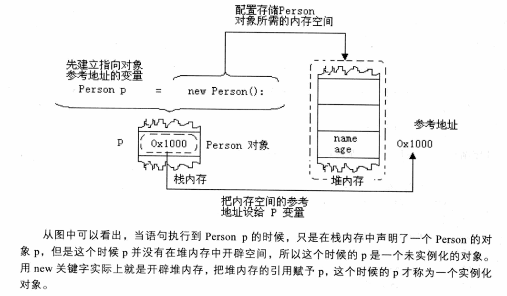
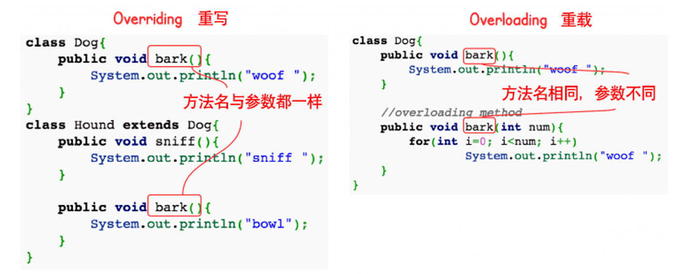
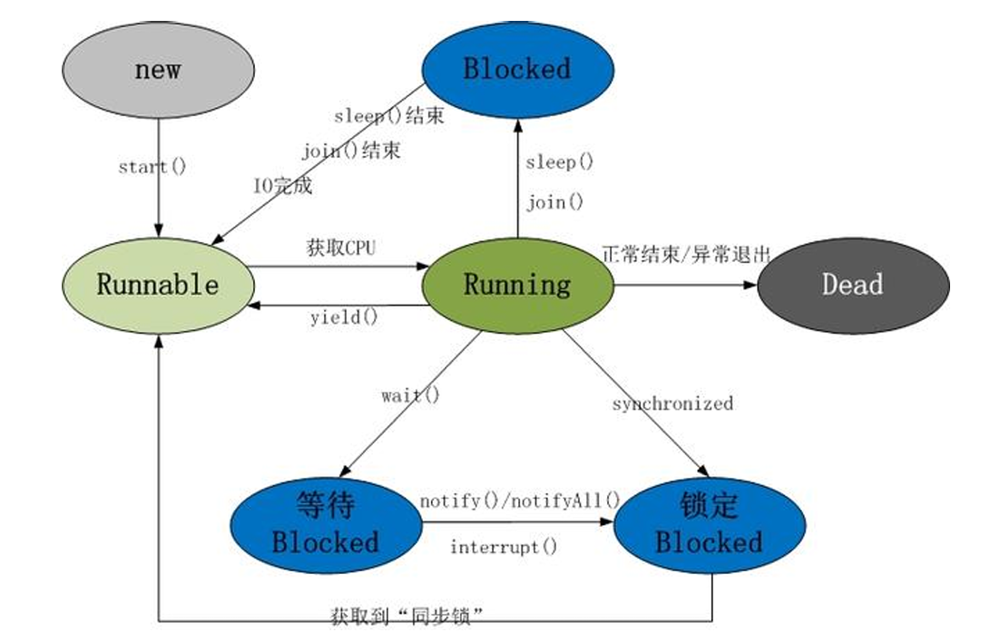
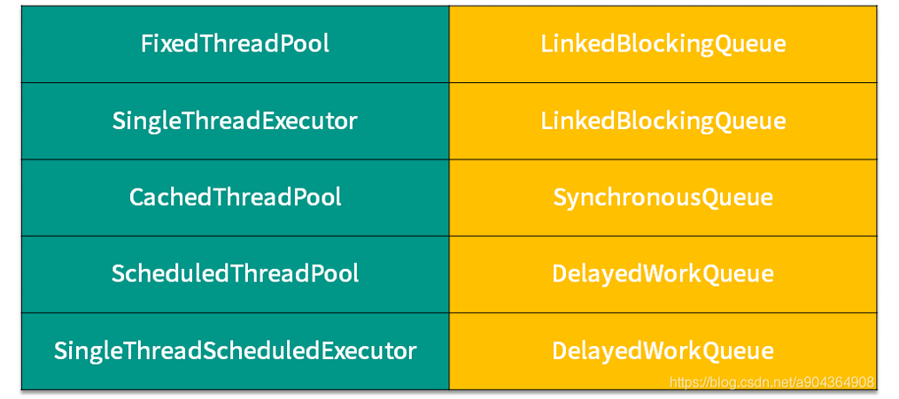
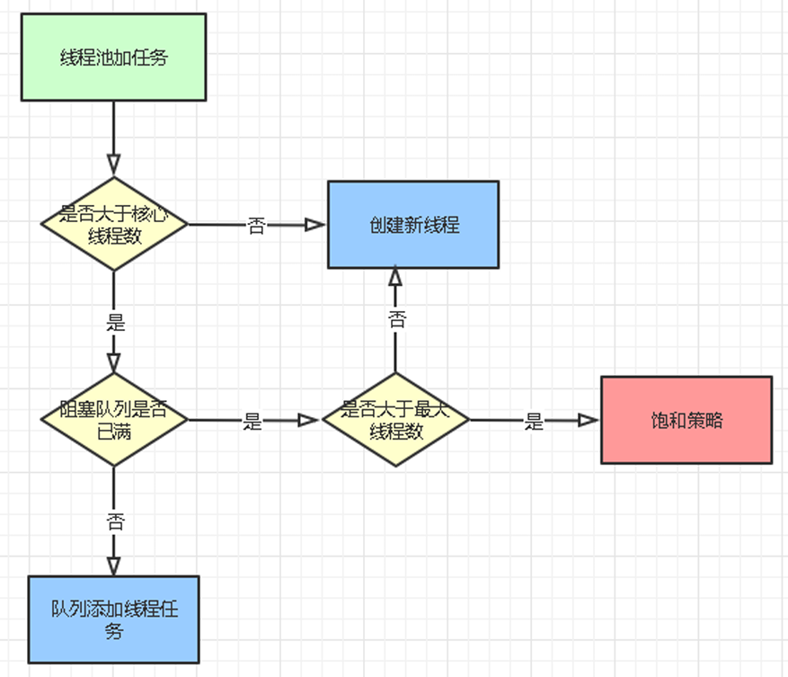

Java 基础语法与算法 @Trenchance 2025.07.01
[TOC]
命名习惯 包名 ：全小写，禁止大写与下划线。com.example.project
类名 ：大写驼峰。EmployeeInfo，Car
接口 ：大写驼峰，形容词、动词。Serializable，Runnable
变量，属性 ：小写驼峰。totalAmount，count
方法 ：小写驼峰。getAge()，calculateSalary()
常量 ：全大写，使用下划线分割。MAX_SIZE
main函数 ide中直接输入main然后回车即可。
或者
1 2 3 4 5 6 7 package org.rzg;public class convert { public static void main (String[] args) { } }
变量 1 2 3 4 5 6 7 8 9 10 11 12 13 14 15 16 17 18 19 20 21 22 23 24 25 26 27 28 29 30 31 32 33 34 35 package org.rzg;public class Var { public static void main (String[] args) { int a = 100 ; int b = 100 ; float n1 = 3.11223344556677f ; double n2 = 3.11223344556677f ; long l1 = 3233422344L ; char c1 = 97 ; String str = "一百" ; System.out.println(a); System.out.println(a+b); System.out.println(a+str); System.out.println(100 +3 +a+str); System.out.println(n1+"\n" +n2); System.out.println(l1); double num1 = 8.1 /3 ; System.out.println(num1); System.out.println(c1); char c2 = '许' ; char c3 = 35768 ; System.out.println((int )c2); System.out.println(c3); char c4='z' ; char c5='A' ; System.out.println((int )c4); System.out.println((int )c5); } }
输出为
1 2 3 4 5 6 7 8 9 10 11 12 13 100 200 100一百 203一百 3.1122334 3.1122334003448486 3233422344 2.6999999999999997 a 35768 许 122 65
注意：float要加f，long要加L，char等于一个数字指的是ascii码，打印时的+是代表拼接，如果是数字则相加，8.1/3会导致精度不够。转换变量类型使用(int)c2这种语法。
1 2 3 4 5 6 7 8 9 10 11 12 package org.rzg;public class convert { public static void main (String[] args) { double d=100 ; int i=100 ; float f=10.1f ; System.out.println(d+i+f); int n1=(int )3.234 ; System.out.println(n1); } }
输出：210.10000038146973和3。
前者自动转换为最精确，即double。后者强制转换。
1 2 3 4 5 6 7 8 9 10 11 12 13 14 15 16 17 18 19 20 21 22 23 24 25 26 27 package org.rzg;public class StrConvert { public static void main (String[] args) { int i=10 ; double d=10.0 ; float f=10.0f ; String s1= i+"" ; String s2= d+"" ; String s3= f+"" ; System.out.println(s1); System.out.println(s2); System.out.println(s3); String s4="123" ; int i1=Integer.parseInt(s4); double d1=Double.parseDouble(s4); float f1=Float.parseFloat(s4); System.out.println(i1); System.out.println(d1); System.out.println(f1); System.out.println(s4.charAt(0 )); System.out.println(s4.charAt(1 )); System.out.println(s4.charAt(2 )); } }
输出：
1 2 3 4 5 6 7 8 9 10 10.0 10.0 123 123.0 123.0 1 2 3
注意，charAt参数是数组的下标索引。charAt是String的方法。
两种int转换为String的方法：
1 2 3 4 5 6 7 8 9 10 11 12 13 package org.rzg;public class Demo8 { public static void main (String[] args) { int a=10 ; String b=Integer.toString(a); System.out.println(b); StringBuilder sb=new StringBuilder (); sb.append(a); System.out.println(sb); } }
自增i++ 1 2 3 4 5 6 7 8 9 10 11 12 13 14 15 16 17 18 19 20 21 package org.rzg;public class AutoInc { public static void main (String[] args) { int i=1 ; int j; j=i++; System.out.println(i++); System.out.println(j+"\n" +i); j=++i; System.out.println(j+"\n" +i); i=i++; System.out.println(i); i=++i; System.out.println(i); } }
输出：
j=i++;先把i赋值给j，再对i自增。
j=++i;先自增，再赋值给j和i。
i=i++不会让i自增。
逻辑运算 &和&&不同。
&&如果看到前面错误，就不执行后面的条件。
&会把所有条件都执行。
1 2 3 4 5 6 7 8 9 10 11 12 13 14 15 16 17 18 package org.rzg;public class Logic { public static void main (String[] args) { int i=20 ; if (i<10 && i++>20 ){ System.out.println("yes1" ); } System.out.println(i); i=20 ; if (i<10 & i++>20 ){ System.out.println("yes2" ); } System.out.println(i); } }
输出：
三目运算 1 2 3 4 5 6 7 8 9 10 11 12 13 14 15 16 package org.rzg;public class ThereOp { public static void main (String[] args) { int a = 10 ; int b = 20 ; int c = 30 ; int max = a>b?a:b; int Max = max>c?max:c; System.out.println(Max); int max2 = (a>b?a:b)>c?(a>b?a:b):c; System.out.println(max2); } }
输出都是30。
键盘输入 java.util.Scanner
如果输入以空格分开，用scanner.next()。
int用scanner.nextInt()
只想读一个char，用System.in.read()获得ascii码再显示转换。注意用try-catch包裹。
1 2 3 4 5 6 7 8 9 10 11 12 13 14 15 16 17 18 19 20 21 22 23 24 25 package org.rzg;import java.io.IOException;import java.util.Scanner;public class ScanInput { public static void main (String[] args) { Scanner scanner = new Scanner (System.in); int age = scanner.nextInt(); System.out.println(age); char a=scanner.next().charAt(0 ); System.out.println(a); String b=scanner.next(); System.out.println(b); try { int ascii = System.in.read(); System.out.println((char )ascii); } catch (Exception e) { e.printStackTrace(); } } }
输入输出：
1 2 3 4 5 6 7 8 77686 77686 khkjhkjh k hjghjg hghjg hghgjhjg jhgjg hjghjg asdsdas a
循环 switch，记得break
1 2 3 4 5 6 7 8 9 10 11 12 13 14 15 16 17 18 19 20 package org.rzg;import java.util.Scanner;public class SwitchUse { public static void main (String[] args) { Scanner scanner = new Scanner (System.in); char c = scanner.next().charAt(0 ); switch (c) { case 'a' : System.out.println("a" ); break ; case 'b' : System.out.println("b" ); break ; default : System.out.println("other" ); } } }
for
1 2 3 4 5 6 7 8 9 10 11 12 13 14 15 16 17 18 package org.rzg;public class ForUse { public static void main (String[] args) { int i; int count=0 ; int sum=0 ; for (i=0 ;i<100 ;i++) { if ((i%9 ==0 )&&(i!=0 )){ System.out.println(i); count+=1 ; sum+=i; } } System.out.println(count+" " +sum); } }
continue，break
1 2 3 4 5 6 7 8 9 10 11 12 13 14 15 16 17 18 19 20 21 package org.rzg;public class CoBr { public static void main (String[] args) { for (int i=0 ;i<4 ;i++){ System.out.println(i); if (i==2 ){ continue ; } System.out.println("execute" ); } for (int i=0 ;i<4 ;i++){ System.out.println(i); if (i==2 ){ break ; } System.out.println("execute" ); } } }
输出：
1 2 3 4 5 6 7 8 9 10 11 12 0 execute 1 execute 2 3 execute 0 execute 1 execute 2
continue跳过这次循环。
break直接出这个循环。
数组 声明形如：int[] arr={7,5,3,4,12,45,10,6,1,0};
或者int[] a1={0,1,2};
int[] a2=new int[a1.length];
冒泡排序
1 2 3 4 5 6 7 8 9 10 11 12 13 14 15 16 17 18 19 20 21 package org.rzg;public class ArrayUse { public static void main (String[] args) { int [] arr={7 ,5 ,3 ,4 ,12 ,45 ,10 ,6 ,1 ,0 }; int n=arr.length; for (int i=n-1 ;i>=1 ;i--){ for (int j=0 ;j<i;j++){ if (arr[j]>arr[j+1 ]){ int temp = arr[j]; arr[j]=arr[j+1 ]; arr[j+1 ]=temp; } } for (int k=0 ;k<n;k++){ System.out.print(arr[k]+" " ); } System.out.println(); } } }
数组赋值。因为数组代表地址，修改一个原来的也会改。
1 2 3 4 5 6 7 8 9 10 11 12 13 14 package org.rzg;public class ArrayAttr { public static void main (String[] args) { String[] a={"aa" ,"bb" }; String[] b=a; System.out.println(a[0 ]+a[1 ]); System.out.println(b[0 ]+b[1 ]); b[0 ]="cc" ; System.out.println(a[0 ]+a[1 ]); System.out.println(b[0 ]+b[1 ]); } }
输出：
数组copy，逐元素赋值。
1 2 3 4 5 6 7 8 9 10 11 12 13 14 package org.rzg;public class ArrayCopy { public static void main (String[] args) { int [] a1={0 ,1 ,2 }; int [] a2=new int [a1.length]; for (int i=0 ;i<a1.length;i++){ a2[i]=a1[i]; } for (int i=0 ;i<a2.length;i++){ System.out.println(a2[i]); } } }
String String向int转换 1 int year=Integer.parseInt(date.substring(0 ,4 ));
子串 1 int year=Integer.parseInt(date.substring(0 ,4 ));
指的是下标0，1，2，3.
1 int month=Integer.parseInt((date.substring(5 ,7 )));
指的是下标5，6.
StringBuilder StringBuilder效率高速度快。
1 2 3 4 5 6 7 8 9 10 11 package org.rzg;public class SbTest { public static void main (String[] args) { StringBuilder sb=new StringBuilder (); sb.append("1" ); sb.append("2" ); System.out.println(sb.toString()); } }
输出12.
sb还有别的方法比如逆序，sb.reverse().toString();
将 String 转换为 StringBuilder 很简单：直接使用 StringBuilder 的构造函数，传入 String 对象。
1 2 StringBuilder sb = new StringBuilder (str);
StringBuilder也有charAt方法：
1 2 3 4 5 6 7 8 9 10 11 12 13 14 package org.rzg;public class StringBuilderTest { public static void main (String[] args) { String str="我爱中国我爱Java" ; StringBuilder sb=new StringBuilder (str); sb.append("我爱Python" ); System.out.println(sb); System.out.println(sb.charAt(4 )); str=sb.toString(); System.out.println(str); } }
charAt 1 2 3 4 5 6 7 8 9 class Solution { public String removeTrailingZeros (String num) { int i=num.length(); while (i>0 &&num.charAt(i-1 )=='0' ) { i--; } return num.substring(0 ,i); } }
charAt是String的方法，返回值为一个char。char用单引号包裹，String用双引号包裹。
String和char数组的相互转换 String到char数组：char[] arr = s.toCharArray();
char数组到String：new String(arr);务必注意不是toString。
1 2 3 4 5 6 7 8 9 10 11 12 13 14 class Solution { public String getSmallestString (String s) { char [] arr = s.toCharArray(); for (int i = 0 ; i + 1 < arr.length; i++) { if (arr[i] > arr[i + 1 ] && arr[i] % 2 == arr[i + 1 ] % 2 ) { char temp = arr[i]; arr[i] = arr[i + 1 ]; arr[i + 1 ] = temp; break ; } } return new String (arr); } }
String和byte数组的相互转换 String到byte数组：byte[] byteArray = str.getBytes();
byte数组到String：new String(byteArray);
1 2 3 4 5 6 7 8 byte [] byteArray = str.getBytes("UTF-8" );byte [] byteArray = str.getBytes();String str = new String (byteArray);String str = new String (byteArray, "UTF-8" );
其他方法 如大小写转换，以及分割字符串。
1 2 3 4 5 6 7 8 9 10 11 12 13 14 15 16 17 18 19 20 21 22 23 24 package org.rzg;public class StringBuilderTest { public static void main (String[] args) { String str="我爱中国 我爱Java " ; StringBuilder sb=new StringBuilder (str); sb.append("我爱Python" ); System.out.println(sb); System.out.println(sb.charAt(5 )); str=sb.toString(); System.out.println(str); System.out.println(str.toUpperCase()); String[] str2=str.split(" " ); for (String s:str2){ System.out.println(s); } } }
String，char[]，char，int 转换总结 ▶ String → char数组
1 2 3 4 String str = "Hello" ;char [] charArray = str.toCharArray(); char [] charArray2 = new char [str.length()];str.getChars(0 , str.length(), charArray2, 0 );
▶ String → char (获取单个字符)
1 2 String str = "A" ;char c = str.charAt(0 );
▶ String → int (解析字符串为整数)
1 2 3 String str = "123" ;int num = Integer.parseInt(str); int num2 = Integer.valueOf(str);
▶ char数组 → String
1 2 3 char [] charArray = {'H' , 'e' , 'l' , 'l' , 'o' };String str1 = new String (charArray); String str2 = String.valueOf(charArray);
▶ char数组 → char (直接访问)
1 2 char [] charArray = {'A' , 'B' , 'C' };char c = charArray[0 ];
▶ char数组 → int (需先转为String再解析)
1 2 char [] charArray = {'1' , '2' , '3' };int num = Integer.parseInt(new String (charArray));
▶ char → String
1 2 3 4 char c = 'A' ;String str1 = String.valueOf(c); String str2 = Character.toString(c); String str3 = "" + c;
▶ char → int (获取Unicode值)
1 2 3 char c = 'A' ;int unicode = (int ) c; int digitValue = c - '0' ;
▶ char → char数组
1 2 3 4 char c = 'X' ;char [] charArray = {c}; char [] charArray2 = new char [1 ];charArray2[0 ] = c;
▶ int → String
1 2 3 4 int num = 123 ;String str1 = String.valueOf(num); String str2 = Integer.toString(num); String str3 = "" + num;
▶ int → char (Unicode转字符)
1 2 int unicode = 65 ;char c = (char ) unicode;
▶ int → char数组 (需先转为String)
1 2 int num = 123 ;char [] charArray = Integer.toString(num).toCharArray();
String与常量池 Integer 1 2 3 4 5 6 7 8 9 10 11 12 13 package org.rzg;public class IntegerUse { public static void main (String[] args) { int num=Integer.parseInt("123" ); Integer i=Integer.valueOf("123" ); System.out.println(i.equals(num)); System.out.println(Integer.toBinaryString(123 )); System.out.println(Integer.toHexString(i)); System.out.println(Integer.toString(i, 10 )); System.out.println(Integer.MAX_VALUE); } }
Number 在 Java 中，Number 是一个抽象类，位于 java.lang 包中，它是所有数值类（如 Integer、Double、Long 等）的父类。Number 类为 Java 中所有数字类型提供了一个通用的基类，并提供了一些基础的操作和方法。这些方法通常用于将数字从一种类型转换为另一种类型。
1 2 Number num = new Integer (10 );byte b = num.byteValue();
DecimalFormat 是 Java 中用于格式化数字输出的类，位于 java.text 包中。
首先介绍非格式化数字：如果数据绝对值小于0.001或者大于10000000，使用科学记数法表示。在 Java 中，float 和 double 类型支持科学计数法。
1 2 3 4 5 6 7 8 9 public class FormatUse { public static void main (String[] args) { double d=0.00000001 ; float f=10000000000f ; System.out.println(d); System.out.println(f); } }
1.23e7 代表 1.23 × 10^7，即 12300000。
1.23e-6 代表 1.23 × 10^(-6)，即 0.00000123。
DecimalFormat类是NumberFormat的一个子类，用于格式化十进制数字，主要是浮点数。
1 2 3 4 5 6 7 8 9 10 import java.text.DecimalFormat;public class FormatUse { public static void main (String[] args) { DecimalFormat df=new DecimalFormat ("#,###.00" ); float f=1234567.123456f ; String n=df.format(f); System.out.println(n); } }
Math 位于 java.lang 包下。
可以使用常量Math.PI Math.E
Math.pow(a, b)：返回 a 的 b 次方（a^b）。
Math.sqrt(x)：返回 x 的平方根。
Math.log(x)：返回 x 的自然对数（以 e 为底）。
Math.log10(x)：返回 x 的以 10 为底的对数。
BigInteger 和 BigDecimal 用于处理任意精度的整数。大于long的精度。
创建对象的两种方法：
通过字符串 ：使用构造函数将字符串转换为 BigInteger。
1 BigInteger bigInt1 = new BigInteger ("1234567890123456789012345678901234567890" );
通过整数值 ：通过 valueOf() 静态方法将基本数据类型转换为 BigInteger。
1 BigInteger bigInt2 = BigInteger.valueOf(12345 );
下面是计算使用方法：
1 2 3 4 5 6 7 8 9 10 11 12 13 14 package org.rzg;import java.math.BigInteger;public class BigIntTest { public static void main (String[] args) { BigInteger b1=new BigInteger ("1234567890123456789012345678901234567890" ); BigInteger b2=BigInteger.valueOf(123456789123456789L ); BigInteger ans=b1.divide(b2); System.out.println(b1+"/" +b2+"=" +ans); long l= ans.longValue(); } }
计算：
1 BigInteger result = a.subtract(b);
转换基本数据类型：
1 int intValue = a.intValue();
BigDecimal支持任意精度的小数运算:
1 2 3 BigDecimal bd1 = new BigDecimal ("10.5" );BigDecimal bd2 = new BigDecimal ("5.5" );BigDecimal sum = bd1.add(bd2);
类的构造方法 构造器：
1 2 3 4 5 6 7 8 9 10 11 12 13 14 15 16 17 18 19 20 21 package org.rzg;public class ConstructorUse { public static void main (String[] args) { Person5 p=new Person5 ("asd" ,13 ); Person5 p1=new Person5 ("wer" ); System.out.println(p.age+" " + p1.age); } } class Person5 { String name; int age; public Person5 (String name,int age) { this .name=name; this .age=age; } public Person5 (String name) { this .name=name; } }
注意，构造方法没有返回值，要写public Person5(String name,int age)而不是public void Person5(String name,int age)
面向对象三大特性 封装：客观事物封装为类。
继承：使用现有类的功能，并在无需重新编写类的情况下进行扩展。
多态：同一个属性或方法在父类和子类中具有不同的含义。
对象 1 2 3 4 5 6 7 8 9 10 11 12 13 14 15 16 17 18 19 20 21 22 23 24 25 26 27 28 29 30 31 32 33 34 package org.rzg;public class Object1 { public static void main (String[] args) { Person xiaoming = new Person (); xiaoming.age=10 ; xiaoming.name="abc" ; Person xiaohong = new Person (); xiaohong=xiaoming; xiaohong.name="xiaohong" ; System.out.println(xiaoming.name); } } class Person { String name; int age; public String getName () { return name; } public void setName (String name) { this .name = name; } public int getAge () { return age; } public void setAge (int age) { this .age = age; } }
输出为xiaohong，这和数组是一个道理，是引用类型，而不是常量型。
1 2 3 4 5 6 7 8 9 10 11 12 13 14 15 16 17 18 19 20 21 22 23 24 25 26 package org.rzg;public class ObjectMethod { public static void main (String[] args) { Person2 person2=new Person2 (); person2.name="Jerry" ; person2.age=18 ; person2.method(person2); System.out.println(person2.name); person2.method2(person2); System.out.println(person2.name); } } class Person2 { String name; int age; void method (Person2 p) { p.name="Tom" ; p.age=18 ; } void method2 (Person2 p) { p=null ; } }
输出均为Tom。方法2不会改变原来的对象。
方法重载：
1 2 3 4 5 6 7 8 9 10 11 12 13 14 15 16 17 18 19 20 21 22 23 24 25 26 27 28 29 package org.rzg;public class OverMethod { public static void main (String[] args) { Num2 a = new Num2 (); a.add(1 ,2 ); a.add(1 ,2 ,3 ); a.add(1 ,4 ,3 ,5 ,6 ,7 ,8 ,2 ); } } class Num2 { void add (int n1,int n2) { System.out.println(n1+n2); } void add (int n1,int n2,int n3) { System.out.println(n1+n2+n3); } void add (int n1,double n2) { System.out.println(n1+n2); } void add (int ...nums) { int a=0 ; for (int i=0 ;i<nums.length;i++){ a+=nums[i]; } System.out.println(a); } }
如果方法同名但是参数不一样，可以重载。
注意这里如果我不知道参数有多少，可以用...来实现。
注意一点，在对象中，如果要对比两个对象是否相同，基本数据类型直接用等于号，String等引用类型需要逐个属性使用.equals方法。
向上向下转型：
1 2 3 4 5 6 7 8 9 10 11 12 13 14 15 16 17 18 19 20 21 22 23 24 25 26 27 28 package org.rzg.up;public class Animal { public void run () { System.out.println("RUN" ); } public void eat () { System.out.println("EAT" ); } } class Cat extends Animal { public void run () { System.out.println("cat run" ); } public void cli () { System.out.println("cat climb" ); } } class Dog extends Animal { public void run () { System.out.println("dog run" ); } public void shut () { System.out.println("dog shut" ); } }
1 2 3 4 5 6 7 8 9 10 11 12 13 package org.rzg.up;public class Test { public static void main (String[] args) { Animal cat = new Cat (); Object cat2 = new Cat (); cat.eat(); cat.run(); Cat cat3 = (Cat) cat; cat3.cli(); } }
运行时多态：
1 2 3 4 5 6 7 8 9 10 11 12 13 14 15 16 17 18 19 20 21 22 23 24 25 26 27 28 29 30 31 32 33 package org.rzg;public class ObjUse2 { public static void main (String[] args) { B b=new B (); System.out.println(b.count); b.method(); A a=b; System.out.println(a==b); a.method2(15 ); System.out.println(a.count); a.method(); } } class A { int count=10 ; public void method () { System.out.println(this .count); } public void method2 (int count) { this .count=count; } } class B extends A { int count=20 ; public void method () { System.out.println(this .count); } }
输出为
A a=b; 编译看左边，运行看右边 。
System.out.println(a.count);为编译，看左边，为A，即15。
a.method();是运行，看右边，为b，即20。
再来一个例子：
1 2 3 4 5 6 7 8 9 10 11 12 13 14 15 16 17 18 19 20 21 22 23 24 25 26 27 28 29 30 31 32 33 34 35 36 37 38 39 package org.rzg;public class ObjUse3 { public static void main (String[] args) { BB bb=new BB (); System.out.println(bb.i); System.out.println(bb.sum()); AA aa=bb; System.out.println(aa.i); System.out.println(aa.sum()); System.out.println(aa.sum2()); } } class AA { public int i=10 ; public int sum () { return i+10 ; } public int sum2 () { return getI()+20 ; } public int getI () { return i; } } class BB extends AA { public int i=20 ; public int sum () { return i+30 ; } public int getI () { return i; } }
输出：
对象字段是静态绑定，不支持多态，看原本的对象类型。
方法是动态绑定，支持多态，看现在指向的对象类型。
属性编译时确定，方法执行时确定。
最后一个输出为40。这里的getI也是动态绑定，绑定的是bb的getI。如果把bb的getI也注释掉，那就是30。
类 
类变量。
1 2 3 4 5 6 7 8 9 10 11 12 13 14 15 16 17 18 19 20 21 22 23 package org.rzg;public class ClassVar { public static void main (String[] args) { Child c1=new Child ("a" ); c1.join(); Child c2=new Child ("b" ); c2.join(); System.out.println(Child.count); } } class Child { public static int count; public String name; public Child (String name) { this .name = name; } public void join () { count++; } }
static是类变量，属于类的变量，不属于对象。
普通方法可以获取静态变量，不要加this。
注意final修饰符，final修饰的变量一定要赋初值。一旦赋值就不可改变。
final修饰一个方法，那么这个方法不能被重写。
final修饰一个类，这个类不能被继承。
代码块 1 2 3 4 5 6 7 8 9 10 11 12 13 14 class Child { { System.out.println("init" ); } public static int count; public String name; public Child (String name) { this .name = name; } public void join () { count++; } }
用大括号括起来。
代码块（Code Block） 是一组用花括号 {} 括起来的语句。它的主要作用是组织语句，并限定变量的作用域。静态代码块（Static Block） 是一种特殊类型的代码块，它具有特殊的执行时机和限制。
局部代码块 (Local Block/Initializer Block)：在 方法内部 或构造器内部独立的 {} 块。主要用于限定局部变量的作用域，使其在代码块结束后自动销毁，节省内存。
1 2 3 4 5 6 7 8 public void anotherMethod () { { int y = 20 ; System.out.println("这是一个局部代码块，y = " + y); } System.out.println("局部代码块外部" ); }
**构造代码块 (Initializer Block/Instance Initializer Block)**：
直接定义在类中，没有 static 关键字修饰的代码块。它在每次创建对象时 都会执行，并且在构造函数之前执行。主要用于初始化实例变量，无论哪个构造器被调用，它都会在构造器之前执行 。
1 2 3 4 5 6 7 8 9 10 11 12 13 14 15 16 17 18 19 20 21 22 23 24 class MyClass { int instanceVar; { System.out.println("构造代码块执行了。" ); instanceVar = 100 ; } public MyClass () { System.out.println("无参构造函数执行了。instanceVar = " + instanceVar); } public MyClass (String name) { System.out.println("有参构造函数执行了。instanceVar = " + instanceVar); } } public class InitializerBlockDemo { public static void main (String[] args) { MyClass obj1 = new MyClass (); System.out.println("---" ); MyClass obj2 = new MyClass ("Test" ); } }
静态代码块是用 static 关键字修饰的代码块。它直接定义在类中，不属于任何方法或构造器。
静态代码块在类加载时 执行，并且只执行一次 。当一个类第一次被加载到 JVM 时（例如，通过 new 关键字创建该类的实例，或者第一次调用该类的静态成员），静态代码块就会被执行。
静态代码块优先于构造代码块、构造函数和任何实例方法的执行。
1 2 3 4 5 6 7 8 9 10 11 12 13 14 15 16 17 18 19 20 21 22 23 24 25 26 27 28 29 30 31 32 33 34 35 36 37 38 39 40 41 42 43 44 45 46 class Student { static String university; static { System.out.println("--- 静态代码块执行了（Student类被加载）---" ); university = "清华大学" ; System.out.println("大学名称初始化为: " + university); } String name; int id; { System.out.println("--- 构造代码块执行了 ---" ); name = "默认姓名" ; } public Student (String name, int id) { System.out.println("--- 构造函数执行了 ---" ); this .name = name; this .id = id; } public void display () { System.out.println("姓名: " + name + ", ID: " + id + ", 学校: " + university); } } public class StaticBlockDemo { public static void main (String[] args) { System.out.println("开始执行 main 方法..." ); Student s1 = new Student ("张三" , 101 ); s1.display(); System.out.println("\n--- 创建第二个学生对象 ---" ); Student s2 = new Student ("李四" , 102 ); s2.display(); } }
输出：
1 2 3 4 5 6 7 8 9 10 11 开始执行 main 方法... --- 静态代码块执行了（Student类被加载）--- 大学名称初始化为: 清华大学 --- 构造代码块执行了 --- --- 构造函数执行了 --- 姓名: 张三, ID: 101, 学校: 清华大学 --- 创建第二个学生对象 --- --- 构造代码块执行了 --- --- 构造函数执行了 --- 姓名: 李四, ID: 102, 学校: 清华大学
总结：
特性
代码块（非静态/实例代码块）
静态代码块（Static Block）
关键字 无
static
位置 类中，无修饰符；方法或构造器内部
类中，用 static 修饰
执行时机 实例代码块： 每次创建对象实例时执行，在构造器之前类加载时 执行，且只执行一次
目的 实例代码块： 初始化实例变量，统一构造器中的初始化逻辑初始化静态变量，执行类级别的单次配置或加载
访问成员 可以访问静态成员和实例成员
只能访问静态成员 ，不能访问实例成员（因为实例可能尚未存在）
this 关键字可以使用 this
不能使用 this
作用域 局部代码块：内部可见；实例代码块：对整个实例有效
对整个类有效
代码块执行顺序静态代码块——> 构造代码块 ——> 构造函数——> 普通代码块
继承中代码块执行顺序：父类静态块——>子类静态块——>父类代码块——>父类构造器——>子类代码块——>子类构造器
容器 Java容器，包括集合（Collection）和键值对（Map）。
Collection包括 List，Queue，Set。
Map包括 HashMap，TreeMap。
Set代表无序（HashSet）、不可重复的集合. HashSet, TreeSet
List代表有序、重复的集合. ArrayList, LinkedList
Map键值对，key无序不可重复. HashMap, TreeMap
Queue有先后顺序，可重复的. LinkedList, PriorityQueue
注意：LinkedList：既实现了 List 接口，也实现了 Deque 接口（双端队列操作，支持队列和栈的操作）。
操作
LinkedListArrayList
插入元素 在头部和尾部高效（O(1)），中间较慢（O(n)）
在末尾高效（O(1)），中间需要移动元素（O(n)）
删除元素 在头部和尾部高效（O(1)），中间较慢（O(n)）
删除中间元素需要移动（O(n)）
随机访问 较慢（O(n)）
快速（O(1)）
内存占用 每个元素占用更多内存（需要存储前后指针）
内存占用较小（仅存储数据）
ArrayList List是java.util包下的一个接口，属于Java集合框架的一部分。
List接口继承自Collection接口，允许重复元素。
1 2 3 4 5 6 7 8 9 10 11 12 13 14 15 16 17 18 19 20 21 22 23 24 25 26 27 28 List<String> list = new ArrayList <>(); list.add("Apple" ); list.add("Banana" ); list.add("Cherry" ); list.add(1 , "Apricot" ); list.remove(2 ); System.out.println(list.get(0 )); list.set(0 , "Avocado" ); System.out.println(list.get(0 )); System.out.println(list.size()); System.out.println(list.isEmpty()); System.out.println(list.contains("Banana" )); System.out.println(list.indexOf("Cherry" )); System.out.println(list.lastIndexOf("Cherry" )); System.out.println(list.subList(0 , 2 ));
嵌套List与矩阵的互相转化 1 2 3 4 5 6 7 8 9 10 11 12 13 14 15 16 17 18 19 20 21 22 23 24 25 26 27 28 29 30 31 32 33 34 35 36 37 38 39 40 41 42 package org.rzg;import java.util.ArrayList;import java.util.List;public class ListUse { public static void main (String[] args) { List<List<Integer>> a=new ArrayList <>(); for (int i=0 ;i<10 ;i++){ List<Integer> b=new ArrayList <>(); for (int j=0 ;j<10 ;j++){ b.add(i+j); } a.add(b); } int [][] c=new int [10 ][10 ]; for (int i=0 ;i<10 ;i++){ List<Integer> b=a.get(i); for (int j=0 ;j<10 ;j++) { c[i][j] = b.get(j); } } for (int i=0 ;i<10 ;i++){ for (int j=0 ;j<10 ;j++){ System.out.print(c[i][j]+"\t" ); } System.out.println(); } for (int i=0 ;i<10 ;i++){ List<Integer> b=a.get(i); for (int j=0 ;j<10 ;j++){ System.out.print(b.get(j)+"\t" ); } System.out.println(); } } }
LinkedList 既可以用作双向链表（LinkedList），也可以用作列表（List），还可以用作栈和队列（Deque）：
1 2 3 4 5 6 7 8 9 10 11 12 13 14 15 16 17 18 19 20 21 22 23 24 25 26 27 28 29 30 31 32 33 34 35 36 37 package org.rzg;import java.util.*;public class LinkedListTest { public static void main (String[] args) { LinkedList<Integer> l=new LinkedList <>(); l.addFirst(1 ); l.addFirst(2 ); l.addFirst(3 ); System.out.println(l.getFirst()); System.out.println(l.getLast()); List<Integer> li=new LinkedList <>(); li.add(1 ); li.add(2 ); li.add(3 ); System.out.println(li.get(0 )); Queue<Integer> q=new LinkedList <>(); q.offer(1 ); q.offer(2 ); q.offer(3 ); System.out.println(q.poll()); System.out.println(q.poll()); System.out.println(q.poll()); Deque<Integer> stack=new LinkedList <>(); stack.push(1 ); stack.push(2 ); stack.push(3 ); System.out.println(stack.pop()); System.out.println(stack.pop()); System.out.println(stack.pop()); } }
HashMap 哈希表初步 1 2 3 4 5 6 7 8 9 10 11 12 13 14 15 16 17 18 19 20 21 22 23 24 25 package org.rzg;import java.util.*;public class ListUse4 { public static void main (String[] args) { Map<Integer,Integer> m=new HashMap <Integer,Integer>(); m.put(1 ,1 ); m.put(1 ,2 ); m.put(2 ,1 ); m.put(3 ,2 ); m.put(2 ,5 ); Set<Map.Entry<Integer,Integer>> s=m.entrySet(); for (int i=0 ;i<10 ;i++){ m.put(i, m.getOrDefault(i, 0 )); } for (Map.Entry<Integer,Integer> entry : s){ System.out.println("key:" +entry.getKey()+" value:" +entry.getValue()); } System.out.println("----------" ); m.put(1 ,10 ); System.out.println("key:1 value:" +m.get(1 )); } }
1 2 3 4 5 6 7 8 9 10 11 12 key:0 value:0 key:1 value:2 key:2 value:5 key:3 value:2 key:4 value:0 key:5 value:0 key:6 value:0 key:7 value:0 key:8 value:0 key:9 value:0 ---------- key:1 value:10
m.entrySet();可以把Map转化为Set，Set中元素的数据类型是Map.Entry<>。
输出可以使用For-Each写法。
1 2 3 4 5 6 7 for (type variable : collection) { } int [] arr = {1 , 2 , 3 , 4 , 5 };for (int num : arr) { System.out.println(num); }
迭代器 Iterator 1 2 3 4 5 6 7 8 9 10 11 12 13 14 15 16 17 18 19 20 21 22 23 24 25 26 27 28 29 30 31 32 33 package org.rzg;import java.util.*;public class HashMapUse { public static void main (String[] args) { Map<Integer,Integer> m=new HashMap <>(); m.put(1 ,2 ); m.put(2 ,3 ); m.put(3 ,4 ); Iterator<Map.Entry<Integer,Integer>> it=m.entrySet().iterator(); while (it.hasNext()){ Map.Entry<Integer,Integer> en=it.next(); System.out.println("key:" +en.getKey()+" value:" +en.getValue()); } System.out.println("-----" ); it=m.entrySet().iterator(); while (it.hasNext()){ Map.Entry<Integer,Integer> en=it.next(); m.put(en.getKey(), en.getValue()+1 ); } it=m.entrySet().iterator(); while (it.hasNext()){ Map.Entry<Integer,Integer> en=it.next(); System.out.println("key:" +en.getKey()+" value:" +en.getValue()); } } }
1 2 3 4 5 6 7 key:1 value:2 key:2 value:3 key:3 value:4 ----- key:1 value:3 key:2 value:4 key:3 value:5
1 2 3 4 5 6 7 8 9 10 11 12 13 14 15 16 package org.rzg;import java.util.*;public class IteratorUse { public static void main (String[] args) { List<String> l = new ArrayList <>(); l.add("ab" ); l.add("bc" ); l.add("cd" ); Iterator<String> it=l.iterator(); while (it.hasNext()){ System.out.println(it.next()); } } }
过程：
获取集合的迭代器。
使用 hasNext() 检查是否有下一个元素。
使用 next() 获取当前元素，并移动到下一个元素。
Arrays.sort 自定义排序 Arrays.sort()本身默认按 Comparable 接口实现排序，如果对象实现了 Comparable 接口（比如 String, Integer），就可以直接使用 Arrays.sort()。
1 2 3 4 int [] nums = {5 , 3 , 8 , 1 };Arrays.sort(nums); String[] arr = {"apple" , "banana" , "orange" }; Arrays.sort(arr);
方法一：Comparator自定义排序 给你一个数组 events，其中 events[i] = [startDayi, endDayi] ，表示会议 i 开始于 startDayi ，结束于 endDayi 。
1 2 3 4 5 6 7 8 9 10 11 12 13 14 15 16 17 18 19 20 21 22 23 24 25 26 27 28 29 package org.rzg;import java.util.*;public class ArraySortUse { public static void main (String[] args) { int [][] events={{1 ,2 },{1 ,3 },{1 ,4 },{2 ,6 },{4 ,5 },{3 ,7 },{5 ,6 },{2 ,3 }}; Arrays.sort(events, new Comparator <int []>() { @Override public int compare (int [] o1, int [] o2) { return o1[0 ] - o2[0 ]; } }); for (int i=0 ;i<events.length;i++){ System.out.println(events[i][0 ]+" " +events[i][1 ]); } System.out.println("---------" ); Arrays.sort(events, (a,b) -> b[0 ]-a[0 ]); for (int i=0 ;i<events.length;i++){ System.out.println(events[i][0 ]+" " +events[i][1 ]); } } }
输出：
1 2 3 4 5 6 7 8 9 10 11 12 13 14 15 16 17 1 2 1 3 1 4 2 6 2 3 3 7 4 5 5 6 --------- 5 6 4 5 3 7 2 6 2 3 1 2 1 3 1 4
方法二：实现Comparable 1 2 3 4 5 6 7 8 9 10 11 12 13 14 15 16 17 18 19 20 21 22 23 24 25 26 27 28 29 30 31 32 package org.rzg;import java.util.*;public class ArrayComparableUse { public static void main (String[] args) { Student[] a= { new Student ("Alice" , 85 ), new Student ("Bob" , 92 ), new Student ("Charlie" , 78 ) }; Arrays.sort(a); for (Student s : a) { System.out.println(s.name+" " +s.score); } } } class Student implements Comparable <Student> { String name; int score; public Student (String name, int score) { this .name=name; this .score=score; } @Override public int compareTo (Student o) { return o.score-this .score; } }
输出：
1 2 3 Bob 92 Alice 85 Charlie 78
Queue 1 public interface Queue <E> extends Collection <E>
Queue是Java集合之一。
方法名
功能
异常行为
add(e)添加元素
添加失败时抛异常
offer(e)添加元素
添加失败返回 false
remove()删除并返回头部元素
空时抛异常
poll()删除并返回头部元素
空时返回 null
element()返回头部元素但不删除
空时抛异常
peek()返回头部元素但不删除
空时返回 null
队列：LinkedList 1 2 3 4 5 6 7 8 9 10 11 12 13 14 15 package org.rzg;import java.util.*;public class QueueUse { public static void main (String[] args) { Queue<Integer> q=new LinkedList <>(); q.offer(5 ); q.offer(2 ); q.offer(4 ); System.out.println(q.peek()); System.out.println(q.poll()); System.out.println(q.size()); } }
先进先出。一般用offer添加，poll取头部并删除，peek取头部不删除。
优先队列（小顶堆）：PriorityQueue 堆顶是最小值（默认）。
可以用自定义比较器实现最大值。
1 2 3 4 5 6 7 8 9 10 11 12 13 14 15 16 17 18 19 20 21 22 package org.rzg;import java.util.*;public class PQueueUse { public static void main (String[] args) { PriorityQueue<Integer> q=new PriorityQueue <>(); q.offer(8 ); q.offer(5 ); q.offer(2 ); while (!q.isEmpty()){ System.out.println(q.poll()); } PriorityQueue<Integer> qmax=new PriorityQueue <>((a,b)->b-a); qmax.offer(1 ); qmax.offer(2 ); qmax.offer(3 ); while (!qmax.isEmpty()){ System.out.println(qmax.poll()); } } }
TreeSet 和 TreeMap 因为红黑树的自平衡特性，TreeSet 保证了 add()、remove() 和 contains() 操作的时间复杂度为 O(log n)，相比 HashSet 的常数时间复杂度，TreeSet 在插入和删除时更慢，但它提供了 元素的有序性 。
1 2 3 4 5 6 7 8 9 10 11 12 13 14 15 16 package org.rzg;import java.util.*;public class TreeSetUse { public static void main (String[] args) { Set<Integer> s = new TreeSet <>(); s.add(5 ); s.add(4 ); s.add(3 ); Iterator<Integer> it=s.iterator(); while (it.hasNext()){ System.out.println(it.next()); } } }
TreeSet 提供了范围查询的方法，可以获取指定范围内的元素。
1 2 3 4 5 6 7 8 9 10 11 12 13 14 15 16 TreeSet<Integer> set = new TreeSet <>(); set.add(1 ); set.add(3 ); set.add(2 ); set.add(5 ); set.add(4 ); System.out.println(set.headSet(4 )); System.out.println(set.tailSet(3 )); System.out.println(set.subSet(2 , 5 ));
注意 TreeSet 也不重复元素。
TreeMap 同样的，它保证按照 键的自然顺序 （或者通过构造时提供的 Comparator）对元素进行排序。插入、删除、查找等操作的时间复杂度为 **O(log n)**，这比 HashMap 的常数时间复杂度要慢。
单例模式 1 2 3 4 5 6 7 8 9 10 11 12 13 14 15 16 17 18 19 20 21 22 package org.rzg;public class SingleInstanceUse { public static void main (String[] args) { Person6 person6=Person6.getP(); System.out.println(person6.name); } } class Person6 { String name; private Person6 () { name="zhang" ; } private static final Person6 p = new Person6 (); public static Person6 getP () { return p; } }
private表示该变量只能在当前类（即 Person6）内部访问，外部类无法直接访问。
static表示该变量属于类本身，而不是类的某个实例。
final该变量在初始化之后不能再被重新赋值。
super super 关键字代表 “父类” ，用于访问父类的变量、方法、构造器
1 2 3 4 super (); super (参数...); super .方法名();super .变量名
类的多态 多态有两种：
编译时多态（静态多态） ：方法重载（Overloading），编译时由参数列表 决定调用哪个方法，方法名相同，参数类型或个数 不同。（注意，仅有返回值不同不足以区分两个方法的重载）
运行时多态（动态多态） ：方法重写（Overriding）+ 父类引用指向子类对象，运行时 JVM 根据对象的实际类型而不是引用变量的声明类型 来决定调用哪个方法。

特性
重载（Overloading）
重写（Overriding）
发生位置 同一个类中
父类与子类之间（存在继承关系）
方法名 必须相同
必须相同
参数列表 必须不同（数量、类型、顺序至少一个不同）
必须完全相同
返回值 可相同可不同
必须相同或父类方法返回值的子类型（协变）
访问修饰符 可相同可不同
子类方法的访问权限不能比父类方法更严格
static 方法可以重载（定义多个同名但参数不同的静态方法）
不能重写（只能是隐藏）
final 方法可以重载
不能重写
private 方法可以重载
不能重写（因为不可见）
目的 为类似功能提供统一的方法名（编译时多态）
为继承的方法提供特定实现，实现运行时多态
绑定方式 编译时绑定（静态绑定）
运行时绑定（动态绑定）
注解 无特定注解
@Override（推荐使用，有助于编译检查）
编译时多态比较简单，就是参数列表不一样的同名方法：
1 2 3 4 5 6 7 8 9 class Printer { void print (String msg) { System.out.println("打印字符串: " + msg); } void print (int num) { System.out.println("打印整数: " + num); } }
下面主要讲运行时多态：
向上转型 ：父类对象=子类对象实例化。（Person7 p=new Student7();）向上转型是指将一个子类对象赋值给一个父类引用变量。它是一种隐式的（自动的）、安全的类型转换，当一个子类对象被转换为父类类型 时，我们称之为向上转型。这种转换总是合法的，因为子类天然包含了父类的所有特性（方法和属性）。
向下转型 ：父类对象强转为子类对象。（有时候转不了）
1 2 3 4 5 6 7 8 9 10 11 12 13 14 15 16 17 18 19 20 21 22 23 24 25 26 27 package org.rzg;public class ClassHomoUse { public static void main (String[] args) { Person7 p=new Student7 (); p.fun1(); p.fun2(); } } class Person7 { public void fun1 () { System.out.println("PersonFun1" ); } public void fun2 () { System.out.println("PersonFun2" ); } } class Student7 extends Person7 { public void fun1 () { System.out.println("StudentFun1" ); } public void fun3 () { System.out.println("StudentFun3" ); } }
观察上面的代码和运行结果（注释）：父类引用指向子类实例化对象的时候，调用子类的方法。
编译看左边，运行看右边 ：编译时指访问成员变量的时候只能看父类的，运行时指访问方法应当看子类的。
1 2 3 4 5 6 7 8 9 10 11 12 13 14 15 16 17 package org.rzg;public class InstanceUse { public static void main (String[] args) { Q q=new Q (); S s=new S (); System.out.println(q instanceof Q); System.out.println(q instanceof S); System.out.println(s instanceof Q); } } class Q {}class S extends Q {}class C {}
一个向上转型的例子：
1 2 3 4 5 6 7 8 9 10 11 12 13 14 15 16 17 18 19 20 21 22 23 24 25 26 27 package org.rzg;public class UpShift { public static void main (String[] args) { Shape a=new Shape (); Shape b=new Circle (); Shape c=new Square (); Shape.draw(a); Shape.draw(b); Shape.draw(c); } } class Shape { public static void draw (Shape s) { if (s instanceof Square){ System.out.println("Draw square" ); } else if (s instanceof Circle) { System.out.println("Draw circle" ); } else { System.out.println("Draw others" ); } } } class Square extends Shape {}class Circle extends Shape {}
一个向下转型的例子：
1 2 3 4 5 6 7 8 9 10 11 12 13 14 package org.rzg;public class DownShift { public static void main (String[] args) { Bird b = new Pigeon (); Pigeon p = (Pigeon) b; } } class Bird {} class Pigeon extends Bird {}
另一个向上转型的例子，工厂模式：
1 2 3 4 5 6 7 8 9 10 11 12 13 14 15 16 17 18 19 20 21 22 23 24 25 26 27 28 29 30 31 32 33 34 35 36 37 38 39 40 class Vehicle { public void start () { System.out.println("Vehicle is starting" ); } } class Car extends Vehicle { @Override public void start () { System.out.println("Car is starting" ); } } class Bike extends Vehicle { @Override public void start () { System.out.println("Bike is starting" ); } } class VehicleFactory { public static Vehicle createVehicle (String type) { if (type.equals("car" )) { return new Car (); } else if (type.equals("bike" )) { return new Bike (); } return null ; } } public class FactoryExample { public static void main (String[] args) { Vehicle car = VehicleFactory.createVehicle("car" ); Vehicle bike = VehicleFactory.createVehicle("bike" ); car.start(); bike.start(); } }
接口 常量 ：接口中所有的成员变量默认为 public static final，即常量，且必须初始化。
方法 ：接口中的方法默认是 public abstract 的，意味着它们没有实现，必须由实现该接口的类来实现。
1 2 3 4 5 6 7 8 9 10 11 12 13 14 15 16 17 18 19 20 21 22 package org.rzg.class_example;public interface PaymentMethod { void pay (double amount) ; void add (double amount) ; } class CreditCardPayment implements PaymentMethod { public void pay (double amount) { System.out.println("通过信用卡支付：" + amount + " 元" ); } public void add (double amount) { } } class PayPalPayment implements PaymentMethod { public void pay (double amount) { System.out.println("通过 PayPal 支付：" + amount + " 元" ); } public void add (double amount) { } }
1 2 3 4 5 6 7 8 9 10 package org.rzg.class_example;public class PayTest { public static void main (String[] args) { PaymentMethod c=new CreditCardPayment (); PaymentMethod p=new PayPalPayment (); c.pay(100.0 ); p.pay(200.1 ); } }
抽象类和接口的区别 1.语法层面上的区别
1）抽象类可以提供成员方法的实现细节，而接口中只能存在public abstract 方法；
2）抽象类中的成员变量可以是各种类型的，而接口中的成员变量只能是public static final类型的；
3）接口中不能含有静态代码块以及静态方法，而抽象类可以有静态代码块和静态方法；
4）一个类只能继承一个抽象类，而一个类却可以实现多个接口。
2.设计层面上的区别
1）抽象类是对一种事物的抽象，即对类抽象，而接口是对行为的抽象 。抽象类是对整个类整体进行抽象，包括属性、行为，但是接口却是对类局部（行为）进行抽象。举个简单的例子，飞机和鸟是不同类的事物，但是它们都有一个共性，就是都会飞。那么在设计的时候，可以将飞机设计为一个类Airplane，将鸟设计为一个类Bird，但是不能将 飞行 这个特性也设计为类，因此它只是一个行为特性，并不是对一类事物的抽象描述。此时可以将 飞行 设计为一个接口Fly，包含方法fly( )，然后Airplane和Bird分别根据自己的需要实现Fly这个接口。然后至于有不同种类的飞机，比如战斗机、民用飞机等直接继承Airplane即可，对于鸟也是类似的，不同种类的鸟直接继承Bird类即可。从这里可以看出，继承是一个 “是不是”的关系，而 接口 实现则是 “有没有”的关系。如果一个类继承了某个抽象类，则子类必定是抽象类的种类，而接口实现则是有没有、具备不具备的关系，比如鸟是否能飞（或者是否具备飞行这个特点），能飞行则可以实现这个接口，不能飞行就不实现这个接口。
2）设计层面不同，抽象类作为很多子类的父类，它是一种模板式设计。而接口是一种行为规范，它是一种辐射式设计。 什么是模板式设计？最简单例子，大家都用过ppt里面的模板，如果用模板A设计了ppt B和ppt C，ppt B和ppt C公共的部分就是模板A了，如果它们的公共部分需要改动，则只需要改动模板A就可以了，不需要重新对ppt B和ppt C进行改动。而辐射式设计，比如某个电梯都装了某种报警器，一旦要更新报警器，就必须全部更新。也就是说对于抽象类，如果需要添加新的方法，可以直接在抽象类中添加具体的实现，子类可以不进行变更；而对于接口则不行，如果接口进行了变更，则所有实现这个接口的类都必须进行相应的改动。
Object 1 2 3 4 5 6 7 8 9 10 11 12 13 14 15 16 17 18 19 20 package org.rzg;public class ObjectExample { public static void main (String[] args) { Boy b1=new Boy (); System.out.println(b1.toString()); } } class Boy extends Object { int age; String name; public String toString () { return "Boy{" + "age=" + age + ", name='" + name + '\'' + '}' ; } }
Object是所有类的父类。
若一个类无extends关键字，则默认继承Object.
Object有toString等等方法，我们可以覆写。
不定长参数方法 1 2 3 4 5 6 7 8 9 10 11 12 13 14 15 package org.rzg;public class OverUse2 { public static int add (int ...a) { int sum=0 ; for (int x:a){ sum+=x; } return sum; } public static void main (String[] args) { System.out.println(add(1 ,2 ,3 ,4 ,5 )); } }
final final 变量
1 2 3 4 5 6 7 8 9 10 11 12 13 14 15 16 17 18 19 package org.rzg;public class FinalTest { public static void main (String[] args) { Boy2 a=new Boy2 (); final Boy2 b=new Boy2 (); System.out.println(b.name); b.name="abc" ; System.out.println(b.name); } } class Boy2 { String name; }
final 方法
final 类
final 参数
包及其访问权限 1 import java.lang.String;
这里，java.lang是包名，String是类名。
1 2 3 import static <类名>.<静态成员>;import static java.lang.Math.PI; import static java.lang.Math.sqrt;
这样可以导入静态的常亮与方法。
下面是一个导入其他包内类的例子：
1 2 3 4 5 6 7 8 9 10 11 12 package org.rzg.importuse;import org.rzg.test8.Number;public class Test { public static void main (String[] args) { Number n=new Number (20 ); System.out.println(n.getNum()); org.rzg.test8.Number b=new org .rzg.test8.Number(50 ); System.out.println(b.getNum()); } }
如果有import，直接用Number n=new Number(20);
如果没有import，可以把整个路径写出来，像这样也可以：
1 2 3 4 5 6 7 8 9 10 package org.rzg.importuse;public class Test { public static void main (String[] args) { org.rzg.test8.Number b=new org .rzg.test8.Number(50 ); System.out.println(b.getNum()); } }
访问控制权限：
修饰符
当前类
同一包
子类（不同包）
非子类（不同包）
public✅
✅
✅
✅
protected✅
✅
✅
❌
缺省
✅
✅
❌
❌
private✅
❌
❌
❌
类 ：只能是 public 或 默认访问（类不能是 private 或 protected）。
成员变量与方法：四个都可以设置。
内部类 1 2 3 4 5 6 7 8 9 10 11 12 13 14 15 16 17 18 19 20 21 22 23 24 25 26 27 28 package org.rzg.innerclassexample;public class Car { private String name; public Car (String name) { this .name = name; } public void start () { System.out.println(name+" start" ); } class Engine { String name; public Engine (String name) { this .name=name; } public void start () { System.out.println(name+" start" ); } } public static void main (String[] args) { Car c=new Car ("abc" ); Car.Engine e=c.new Engine ("cde" ); c.start(); e.start(); } }
内部类不仅可以在外部类使用，还可以在其他类使用：
1 2 外部类 outer = new 外部类(); 外部类.内部类 inner = outer.new 内部类();
关于同名的变量怎么使用的问题：
1 2 3 4 5 6 7 8 9 10 11 12 13 14 package org.rzg.innerclassexample;public class ClassB { private int x=1 ; private class inner { private int x=2 ; public void fun () { int x=10 ; x++; this .x++; ClassB.this .x++; } } }
非静态内部类 的实例依赖于 外部类的实例而存在。静态内部类 的实例不依赖于 外部类的实例，它可以独立存在。
特性
非静态内部类 (Inner Class)
静态内部类 (Static Nested Class)
与外部类实例的关系 强依赖 。每个实例都隐式持有外部类实例的引用。独立 。不持有外部类实例的引用，只是在命名空间上属于外部类。
实例化方式 OuterClass outer = new OuterClass(); OuterClass.InnerClass inner = outer.new InnerClass();OuterClass.StaticNestedClass nested = new OuterClass.StaticNestedClass();
访问外部类成员 可以访问外部类的所有成员 （包括 private 的静态和非静态成员）。
只能访问 外部类的静态成员 （包括 private 的静态成员）。
自身成员限制 不能定义静态成员 （static 字段和 static 方法），除非是 static final 的编译期常量。可以定义所有类型 的成员（静态和非静态），和普通类一样。
内存影响 可能导致内存泄漏 。只要内部类实例存在，其关联的外部类实例就不会被垃圾回收。
不会 。因为它不持有外部类实例的引用，生命周期是独立的。
主要用途 当内部类需要与外部类的特定实例紧密协作时使用。
仅作为外部类的逻辑分组，或实现设计模式（如Builder模式）。
非静态内部类 (Inner Class)
它与外部类的一个具体实例绑定。你不能在没有外部类实例的情况下创建非静态内部类的实例。
1 2 3 4 5 6 7 8 9 10 11 12 13 14 15 16 17 18 19 20 21 22 23 24 public class OuterClass { private String outerField = "Outer Field" ; public class InnerClass { public void display () { System.out.println("Accessing from InnerClass: " + outerField); } } } public class Demo { public static void main (String[] args) { OuterClass outerObject = new OuterClass (); OuterClass.InnerClass innerObject = outerObject.new InnerClass (); innerObject.display(); } }
静态内部类 (Static Nested Class)
它在行为上更像一个普通的顶级类，只是被“包装”在了另一个类的命名空间里。它的创建不依赖于外部类的任何实例。
1 2 3 4 5 6 7 8 9 10 11 12 13 14 15 16 17 18 19 20 21 22 23 24 25 public class OuterClass { private String outerField = "Outer Field" ; private static String staticOuterField = "Static Outer Field" ; public static class StaticNestedClass { public void display () { System.out.println("Accessing from StaticNestedClass: " + staticOuterField); } } } public class Demo { public static void main (String[] args) { OuterClass.StaticNestedClass nestedObject = new OuterClass .StaticNestedClass(); nestedObject.display(); } }
匿名内部类 只在创建对象 的时候会用到。用于快速实现一个接口 ，只用一次的场景。
语法为：
举一个例子：
1 2 3 4 5 6 package org.rzg.anyclassuse;public interface Dog { public void move () ; public void call () ; }
1 2 3 4 5 6 7 8 9 10 11 12 13 14 15 16 17 18 package org.rzg.anyclassuse;public class Main { public static void main (String[] args) { Dog d=new Dog () { @Override public void move () { System.out.println("move" ); } @Override public void call () { System.out.println("call" ); } }; d.call(); d.move(); } }
这里我们实例化了一个接口。接口正常情况下是不能被实例化的，其实这里实例化的是该接口的匿名实现类。
对象 d 在这里并不属于任何一个具体的实现类，只能被解读为一个无名实现类的对象。
异常处理 异常分为两大类，Checked Exceptions（检查型异常），Unchecked Exceptions（非检查型异常）。
检查型：程序必须处理这些异常（见下面的代码）。编译时强制检查。IOException、SQLException、ClassNotFoundException 等。
非检查型：不需要显式捕获。运行时异常。NullPointerException、ArrayIndexOutOfBoundsException、ArithmeticException 等。
1 2 3 4 5 6 7 8 9 10 package org.rzg;import java.io.FileReader;public class Demo2 { public static void main (String[] args) { FileReader f=new FileReader ("abc.txt" ); } }
Java 异常处理：
1 2 3 4 5 6 7 8 9 try { } catch (ExceptionType1 e1) { } catch (ExceptionType2 e2) { } finally { }
自定义异常类 首先可以自己定义一个异常类，继承 Exception 即可。
1 2 3 4 5 6 7 package org.rzg.exceptiontest;public class MyException extends Exception { public MyException (String msg) { super (msg); } }
然后我们可以写一个可能触发异常的方法，这里有三种方案：
方案一：
1 2 3 4 5 6 7 8 9 10 11 12 13 14 15 16 17 18 19 20 21 22 23 24 25 package org.rzg.exceptiontest;public class Test { public static void main (String[] args) { System.out.println(fun(101 ,1 )); } public static int fun (int n1,int n2) { int result=0 ; try { result = n1+n2; if (n1<0 ||n2<0 ){ throw new MyException ("不能负数" ); } if (n1>100 ||n2>100 ){ throw new MyException ("数值过大" ); } } catch (MyException e){ System.out.println(e); } return result; } }
输出：
1 2 3 4 org.rzg.exceptiontest.MyException: 数值过大 102 进程已结束,退出代码0
方案二：
1 2 3 4 5 6 7 8 9 10 11 12 13 14 15 16 17 18 19 20 21 22 23 package org.rzg.exceptiontest;public class Test { public static void main (String[] args) { try { System.out.println(fun(101 ,1 )); } catch (MyException e) { System.out.println(e); } } public static int fun (int n1,int n2) throws MyException{ if (n1<0 ||n2<0 ){ throw new MyException ("不能负数" ); } if (n1>100 ||n2>100 ){ throw new MyException ("数值过大" ); } return n1+n2; } }
输出：
1 2 3 org.rzg.exceptiontest.MyException: 数值过大 进程已结束,退出代码0
方案三：
1 2 3 4 5 6 7 8 9 10 11 12 13 14 15 16 17 18 19 20 21 22 23 package org.rzg.exceptiontest;public class Test { public static void main (String[] args) throws Exception { System.out.println(fun(101 ,1 )); } public static int fun (int n1,int n2) throws MyException{ if (n1<0 ||n2<0 ){ throw new MyException ("不能负数" ); } if (n1>100 ||n2>100 ){ throw new MyException ("数值过大" ); } return n1+n2; } }
输出：
1 2 3 4 5 Exception in thread "main" org.rzg.exceptiontest.MyException: 数值过大 at org.rzg.exceptiontest.Test.fun(Test.java:18) at org.rzg.exceptiontest.Test.main(Test.java:6) 进程已结束,退出代码1
三种方案中，方案二是最优的。
在程序中使用自定义异常类，大体可分为以下几个步骤：
创建自定义异常类。
在方法中通过throw关键字抛出异常对象。
如果在当前抛出异常的方法中处理异常，可以使用try-catch语句块捕获并处理，否则在方法的声明处通过throws关键字指明要抛出给方法调用者的异常 ，继续进行下一步操作。
在出现异常的方法的调用者中捕获并处理异常 。
throw 和 throws 有何区别？throws 关键字通常被应用在声明方法 时，用来指定方法可能抛出的异常。
1 public static void main (String[] args) throws Exception
throw 关键字通常用于方法体 中，并且抛出一个异常对象。程序在执行到throw语句时立即终止，它后面的语句都不执行。常用于自定义异常。
1 2 3 if (n1<0 ||n2<0 ){ throw new MyException ("不能负数" ); }
如果是Error类、RuntimeException类或它们的子类（非检查型），可以不使用throws关键字来声明要抛出的异常，编译仍能顺利通过，运行时会被系统自动抛出。
继承原则 子类方法只能抛出父类方法抛出的异常的子集，或者父类异常的子类。
1 2 3 4 5 6 7 8 9 10 11 12 13 14 15 16 17 18 19 20 21 class Parent { public void doSomething () throws IOException { } } class Child extends Parent { @Override public void doSomething () throws FileNotFoundException { } }
文件IO 字节/字符 IO Java语言定义了许多类专门负责各种方式的输入／输出，这些类都被放在 java.io 包中。
其中，所有输入流类都是抽象类InputStream（字节输入流）或抽象类Reader（字符输入流）的子类；
而所有输出流都是抽象类OutputStream（字节输出流）或抽象类Writer（字符输出流）的子类。
注意，因为 IOException，需要显式捕获。
File File类是java.io包中唯一代表磁盘文件本身的类。可以通过调用File类中的方法，实现创建、删除、重命名文件等操作。
用File类创建一个文件对象：
1 File fd=new File ("C:\\" );
文件输入输出流 FileInputStream类与FileOutputStream类，字节流操控磁盘文件。
FileReader类和FileWriter类对应了FileInputStream类和FileOutputStream类。字符流。
BufferedInputStream类可以对所有InputStream类进行带缓存区的包装以达到性能的优化。使用BufferedOutputStream类输出信息和仅用OutputStream类输出信息完全一样。
BufferedReader类与BufferedWriter类分别继承Reader类与Writer类。这两个类同样具有内部缓存机制，并能够以行为单位进行输入／输出。
数据输入／输出流（DataInputStream类与DataOutputStream类）允许应用程序以与机器无关的方式从底层输入流中读取基本Java数据类型。
详细的例子：
1 2 3 4 5 6 7 8 9 10 11 12 13 14 15 16 17 18 19 20 21 22 23 24 25 26 27 28 29 30 31 32 33 34 35 36 37 38 39 40 41 42 43 44 45 46 47 48 49 50 51 52 53 54 55 56 57 58 59 60 61 62 63 64 65 66 67 68 69 package org.rzg.filetest;import java.io.*;public class FileExample { public static void main (String[] args) throws Exception{ File f=new File ("test.txt" ); System.out.println(f.getName()+" " +f.getAbsolutePath()+" " +f.canWrite()); FileOutputStream fout=new FileOutputStream (f); String s1="你好，文件你好" ; byte [] b1=s1.getBytes(); fout.write(b1); fout.close(); FileInputStream fin=new FileInputStream (f); int len=0 ; byte [] b2=new byte [2048 ]; while ((len=fin.read(b2))!=-1 ){ System.out.println(new String (b2,0 ,len)); } fin.close(); FileWriter fw=new FileWriter (f,true ); fw.write(s1); fw.close(); FileReader fr=new FileReader (f); char [] buffer=new char [2048 ]; while ((len=fr.read(buffer))!=-1 ){ System.out.println(new String (buffer,0 ,len)); } fr.close(); FileWriter fw2=new FileWriter (f,true ); BufferedWriter bw=new BufferedWriter (fw2); String[] s5={"你好java" ,"你好SQL" ,"你好Springboot" }; bw.newLine(); for (String x:s5){ bw.write(x); bw.newLine(); } bw.close(); fw.close(); FileReader fr2=new FileReader (f); BufferedReader br=new BufferedReader (fr2); String s6; while ((s6=br.readLine())!=null ){ System.out.println(s6); } br.close(); fr2.close(); FileOutputStream fout2=new FileOutputStream (f); DataOutputStream dout=new DataOutputStream (fout2); dout.writeFloat(2.2345f ); dout.writeLong(2282349894344372389L ); dout.writeUTF("中国汉字" ); dout.close(); FileInputStream fin2=new FileInputStream (f); DataInputStream din=new DataInputStream (fin2); System.out.println(din.readFloat()); System.out.println(din.readLong()); System.out.println(din.readUTF()); din.close(); } }
枚举类 （没懂这是干啥的，等以后做项目慢慢看吧）
1 2 3 4 5 6 7 8 9 10 11 12 13 14 15 16 package org.rzg.enumuse;public enum AppConstants { MAX_USER_COUNT(100 ), APP_NAME("MyApplication" ); private final Object value; AppConstants(Object value) { this .value = value; } public Object getValue () { return value; } }
1 2 3 4 5 6 7 package org.rzg.enumuse;public class Demo { public static void main (String[] args) { System.out.println(AppConstants.APP_NAME.getValue()); } }
例2：
1 2 3 4 5 6 7 8 9 10 11 12 13 14 15 16 17 18 19 20 21 22 23 24 25 26 27 28 29 30 31 32 33 public enum Planet { MERCURY(3.302e+23 , 2.439e6 ), VENUS(4.869e+24 , 6.052e6 ), EARTH(5.975e+24 ,6.378e6 ), MARS(6.419e+23 , 3.393e6 ), JUPITER(1.899e+27 , 7.149e7 ), SATURN(5.685e+26 , 6.027e7 ), URANUS(8.683e+25 , 2.556e7 ), NEPTUNE(1.024e+26 ,2.477e7 ); private final double mass; private final double radius; private final double surfaceGravity; private static final double G = 6.67300E-11 ; Planet(double mass, double radius) { this .mass = mass; this .radius = radius; surfaceGravity = G * mass / (radius * radius); } public double mass () { return mass; } public double radius () { return radius; } public double surfaceGravity () { return surfaceGravity; } public double surfaceWeight (double mass) { return mass * surfaceGravity; } }
泛型 建议搞明白向上向下转型之后再看这章。
在没有出现泛型之前，Java也提供了对Object类型的引用“任意化”操作，这种“任意化”操作就是对Object类型引用进行向下转型及向上转型操作.
如果没有泛型，我们通常将集合、容器或其他数据结构的元素类型设为 Object，然后通过强制类型转换将其转换为目标类型。
当我们使用 Object 类型时，编译器无法检查 元素的具体类型，导致在运行时 可能会发生类型错误：
1 2 3 4 Object obj = "Hello" ;String str = (String) obj; Integer num = (Integer) obj;
一个更具体的例子：
1 2 3 4 5 6 7 8 9 10 11 12 13 14 15 16 17 18 19 20 21 22 23 24 25 26 27 package org.rzg;public class ObjectUse3 { public static void main (String[] args) { Test t=new Test (); String s="你好" ; t.setA(s); System.out.println(t.getA()); Integer i=Integer.parseInt("1234" ); t.setA(i); System.out.println(t.getA()); String str=(String)t.getA(); System.out.println(str); } } class Test { private Object a; public Object getA () { return a; } public void setA (Object a) { this .a=a; } }
泛型的语法：
例如：
1 List<Integer> l=new ArrayList <>();
这里的List<Integer>就是类名<T>。如果不指定具体类型，T则采用Object类型。
下面给出一个具体的泛型例子：
1 2 3 4 5 6 7 8 9 10 11 12 13 14 15 16 17 18 19 20 21 22 23 24 25 26 27 28 29 30 31 32 33 34 35 36 37 38 package org.rzg;public class GenericsTest { public static void main (String[] args) { Book<String> a=new Book <>("一本书" ); Book<Integer> b=new Book <>(123 ); Book<Boolean> c=new Book <>(true ); Book<Person12> d=new Book <>(new Person12 ("zhang" )); System.out.println(a.getInfo()); System.out.println(b.getInfo()); System.out.println(c.getInfo()); System.out.println(d.getInfo()); } } class Book <T>{ private T info; public Book (T info) { this .info=info; } public T getInfo () { return info; } } class Person12 { String name; public Person12 (String name) { this .name=name; } @Override public String toString () { return "Person12{" + "name='" + name + '\'' + '}' ; } }
如果写成这样：
1 Book<String> e=new Book <>(123 );
就会编译报错：
1 不兼容的类型。实际为 org.rzg.Book<java.lang.Integer>'，需要 'org.rzg.Book<java.lang.String>'
泛型还可以限制可用类型：
1 2 3 4 5 6 7 8 9 10 11 12 13 14 15 package org.rzg;import java.util.*;public class LimitUse { public static void main (String[] args) { Test2<ArrayList> a=new Test2 <>(); Test2<LinkedList> b=new Test2 <>(); } } class Test2 <T extends List >{}
在上面这个实例中，设置泛型类型必须实现List接口。
使用类型通配符：
推荐教程：Java泛型中通配符的使用详解_泛型通配符-CSDN博客
在 Java 语言中，数组是协变的，也就是说，如果 Integer 扩展了 Number，那么不仅 Integer 是 Number，而且 Integer[] 也是 Number[]，在要求 Number[] 的地方完全可以传递或者赋予 Integer[]。
但是泛型不能这样操作：
1 2 3 4 5 6 7 8 9 10 11 12 13 14 15 16 package org.rzg;import java.util.*;public class Test7 { public static void main (String[] args) { List<Integer> l=new ArrayList <>(); test(l); } public static void test (List<Object> l) { for (Object x:l){ System.out.println(x); } } }
苹果 IS-A 水果
装苹果的盘子 NOT-IS-A 装水果的盘子
所以，就算容器里装的东西之间有继承关系，但容器之间是没有继承关系。
所以我们不可以把Plate<Apple>的引用传递给Plate<Fruit>。
这里我们先补充一下泛型类型擦除机制：
编译时： 编译器会检查你代码中泛型的使用是否符合类型安全。它利用了你在尖括号 <> 中提供的类型信息。
运行时： 当你编译后的字节码（.class文件）在Java虚拟机（JVM）上运行时，所有具体的类型参数信息都会被移除（擦除） 。泛型类型被替换为其原始类型（Raw Type） 。如果类型参数没有指定任何边界（如 <T>），它会被擦除为 Object。 MyClass<T> 在运行时变成 MyClass（原始类型），其内部的 T 被当作 Object 处理。
泛型类并没有自己独有的 Class 类对象。比如并不存在 List<String>.class 或是 List<Integer>.class，而只有 List.class，因此在运行时无法获得泛型的真实类型信息。
泛型的类型参数不能用在 Java 异常处理的 catch 语句中。因为异常处理是由 JVM 在运行时刻来进行的。由于类型信息被擦除，JVM 是无法区分两个异常类型 MyException<String> 和 MyException<Integer> 的。对于 JVM 来说，它们都是 MyException 类型的。也就无法执行与异常对应的 catch 语句。
了解了类型擦除机制之后，就会明白编译器承担了全部的类型检查工作 。编译器禁止某些泛型的使用方式，正是为了确保类型的安全性。
现在我们终于引入类型通配符 ，实现装苹果的盘子与装水果的盘子的赋值：
1 2 3 4 5 6 7 8 9 10 11 12 13 14 15 16 17 18 19 20 21 22 23 24 package org.rzg;import java.util.*;public class Test8 { public static void main (String[] args) { List<? extends Fruit > l1=new ArrayList <Apple>(); List<? extends Fruit > l2=new ArrayList <Fruit>(); List<? extends Fruit > l3=new ArrayList <Food>(); List<? super Fruit> l4=new ArrayList <Orange>(); List<? super Fruit> l5=new ArrayList <Food>(); } } class Food {}class Fruit extends Food {}class Apple extends Fruit {}class Orange extends Fruit {}
上界<? extends T>不能往里存，只能往外取到T及其父类中。生产者。
1 2 3 4 List<Orange> oranges = new ArrayList <>(); List<? extends Fruit > fruits = oranges; fruits.add(new Apple ()); Apple a3=fruits.get(0 );
下界<? super T>不影响往里存，但往外取只能放在Object对象里。消费者。
1 2 3 4 List<Object> objects = new ArrayList <>(); objects.add("我是一个字符串" ); List<? super Apple> basket = objects; Apple apple = basket.get(0 );
1 2 3 4 5 6 7 8 9 10 11 12 13 14 15 16 17 18 19 20 21 22 23 24 25 26 27 28 29 30 31 32 33 34 35 36 37 38 39 package org.rzg;import java.util.*;public class Test8 { public static void main (String[] args) { List<? extends Fruit > l1=new ArrayList <Apple>(); List<? extends Fruit > l2=new ArrayList <Fruit>(); List<? extends Fruit > l3=new ArrayList <Food>(); List<? super Fruit> l4=new ArrayList <Orange>(); List<? super Fruit> l5=new ArrayList <Food>(); List<? super Fruit> l6=new ArrayList <Fruit>(); l1.add(new Apple ()); l1.add(new Fruit ()); l1.add(new Food ()); Fruit a1=l1.get(0 ); Food a2=l1.get(0 ); Apple a3=l1.get(0 ); Orange a4=l1.get(0 ); l5.add(new Orange ()); l5.add(new Apple ()); l5.add(new Fruit ()); l5.add(new Food ()); Object a5=l5.get(0 ); Food a6=l5.get(0 ); Fruit a7=l5.get(0 ); } } class Food {}class Fruit extends Food {}class Apple extends Fruit {}class Orange extends Fruit {}
总结：Producer Extends Consumer Super 。
反射 反射：程序在运行时动态地获取类的信息并操作类或对象
程序在运行时 可以：
获取任意一个类的所有属性和方法
调用任意一个对象的属性和方法
修改任意一个对象的属性和方法
创建任意一个类的实例
类名
作用
Class表示类的实体，在运行时表示类和接口
Field表示类的成员变量（属性）
Method表示类的方法
Constructor表示类的构造方法
Modifier提供对类和成员访问修饰符的解码方法
例如：
1 2 3 4 5 6 7 8 9 10 11 12 13 14 15 16 class Person { private String name; public int age; } Field ageField = Person.class.getField("age" );Person p = new Person ();ageField.set(p, 30 ); int age = (int ) ageField.get(p); Field nameField = Person.class.getDeclaredField("name" );nameField.setAccessible(true ); nameField.set(p, "李四" ); String name = (String) nameField.get(p);
对象创建的四种方式 1.使用 new 关键字，调用构造函数。
2.使用 Class 类的 newInstance() 或 Constructor 类的 newInstance() (反射机制)。
1 2 3 4 5 6 7 8 9 10 11 12 13 14 15 16 17 18 19 20 21 22 23 24 25 26 27 28 29 30 31 32 33 34 35 36 37 38 39 40 41 class MyClass { String name; public MyClass () { this .name = "反射创建的默认名称" ; System.out.println("MyClass对象被创建 (通过反射，无参构造)" ); } public MyClass (String name) { this .name = name; System.out.println("MyClass对象被创建 (通过反射，有参构造，name = " + name + ")" ); } } public class ReflectionCreateObjectDemo { public static void main (String[] args) { try { java.lang.reflect.Constructor<MyClass> constructor1 = MyClass.class.getDeclaredConstructor(); MyClass obj4 = constructor1.newInstance(); System.out.println(obj4.name); System.out.println("---" ); java.lang.reflect.Constructor<MyClass> constructor2 = MyClass.class.getDeclaredConstructor(String.class); MyClass obj5 = constructor2.newInstance("反射创建的指定名称" ); System.out.println(obj5.name); } catch (Exception e) { e.printStackTrace(); } } }
3.使用 clone() 方法：clone() 方法是 Object 类中定义的一个方法，用于创建现有对象的副本。当一个对象调用 clone() 方法时，JVM 会在内存中创建一个与原对象相同的新对象，并复制原对象的所有字段的值到新对象中。
要使一个类能够被克隆，它必须实现 java.lang.Cloneable 接口（一个标记接口，没有方法）。否则，调用 clone() 会抛出 CloneNotSupportedException。
clone() 默认执行的是浅拷贝（Shallow Copy）。如果对象包含对其他对象的引用，那么这些引用本身会被拷贝，而不是它们指向的对象。如果需要创建引用的对象的副本，则需要实现深拷贝（Deep Copy）。
1 2 3 4 5 6 7 8 9 10 11 12 13 14 15 16 17 18 19 20 21 22 23 24 25 26 27 28 29 30 31 32 33 34 35 36 37 38 39 40 41 42 43 44 45 46 47 48 49 50 51 52 53 54 55 56 57 58 59 60 61 62 63 class Employee implements Cloneable { String name; int age; Address address; public Employee (String name, int age, String city) { this .name = name; this .age = age; this .address = new Address (city); System.out.println("Employee对象被创建 (通过 new): " + this .name); } static class Address { String city; public Address (String city) { this .city = city; } @Override public String toString () { return "Address [city=" + city + "]" ; } } @Override public Object clone () throws CloneNotSupportedException { return super .clone(); } @Override public String toString () { return "Employee [name=" + name + ", age=" + age + ", address=" + address + "]" ; } } public class CloneCreateObjectDemo { public static void main (String[] args) { try { Employee emp1 = new Employee ("张三" , 30 , "北京" ); Employee emp2 = (Employee) emp1.clone(); System.out.println("克隆对象 emp2: " + emp2); System.out.println("emp1 == emp2 ?: " + (emp1 == emp2)); System.out.println("emp1.address == emp2.address ?: " + (emp1.address == emp2.address)); emp2.name = "李四" ; emp2.address.city = "上海" ; System.out.println("修改 emp2 后：" ); System.out.println("emp1: " + emp1); System.out.println("emp2: " + emp2); } catch (CloneNotSupportedException e) { e.printStackTrace(); } } }
4.使用反序列化（Deserialization）：当一个对象被序列化（Serialization） 后，它被转换为字节流并可以存储到文件或通过网络传输。反序列化就是将这些字节流重新构建成 Java 对象的过程。
1 2 3 4 5 6 7 8 9 10 11 12 13 14 15 16 17 18 19 20 21 22 23 24 25 26 27 28 29 30 31 32 33 34 35 36 37 38 39 40 41 42 43 44 45 46 47 48 49 50 51 52 53 54 import java.io.*;class Product implements Serializable { private static final long serialVersionUID = 1L ; String name; double price; public Product (String name, double price) { this .name = name; this .price = price; System.out.println("Product对象被创建 (通过 new): " + this .name); } private Product () { System.out.println("Product的无参构造函数被调用 (反序列化不会调用)" ); } @Override public String toString () { return "Product [name=" + name + ", price=" + price + "]" ; } } public class DeserializationCreateObjectDemo { public static void main (String[] args) { Product originalProduct = new Product ("笔记本电脑" , 8999.00 ); String filename = "product.ser" ; try (ObjectOutputStream oos = new ObjectOutputStream (new FileOutputStream (filename))) { oos.writeObject(originalProduct); System.out.println("对象已序列化到文件: " + filename); } catch (IOException e) { e.printStackTrace(); } Product deserializedProduct = null ; try (ObjectInputStream ois = new ObjectInputStream (new FileInputStream (filename))) { deserializedProduct = (Product) ois.readObject(); System.out.println("对象已从文件反序列化。" ); } catch (IOException | ClassNotFoundException e) { e.printStackTrace(); } if (deserializedProduct != null ) { System.out.println("原始对象: " + originalProduct); System.out.println("反序列化对象: " + deserializedProduct); System.out.println("originalProduct == deserializedProduct ?: " + (originalProduct == deserializedProduct)); } } }
注解 Annotation 该功能并不影响程序的运行，但是会对编译器警告等辅助工具产生影响。
当开发者误以为 自己在重写方法，但实际上方法签名写错 时：
1 2 3 4 5 6 7 8 9 10 11 12 class Parent { public void show (String msg) { System.out.println(msg); } } class Child extends Parent { public void show (int num) { System.out.println(num); } }
如果加上 @Override，编译器会立即报错。
（其他略）
lambda表达式 lambda表达式用来表示匿名函数 ，也就是没有函数名字的函数。
用于替代冗长的匿名内部类 。
语法：
1 (parameters) -> { expression or statements }
情况
示例
说明
无参数
() -> System.out.println("Hello")空括号表示无参数
单参数
s -> System.out.println(s)可省略括号
多参数
(a, b) -> a + b需括号包围
带类型
(String s) -> s.length()显式声明参数类型
多语句
(x, y) -> { int sum = x + y; return sum; }使用大括号和 return
空返回
msg -> { System.out.println(msg); }无返回值时可省略 return
Lambda 表达式必须与函数式接口 配合使用：只包含一个抽象方法 的接口。常见的函数式接口：
接口
方法签名
用途
Function<T, R>R apply(T t)转换操作
Predicate<T>boolean test(T t)条件判断
Consumer<T>void accept(T t)消费操作
Supplier<T>T get()提供对象
Runnablevoid run()无参无返回
Comparator<T>int compare(T o1, T o2)比较操作
lambda表达式的返回值是一个函数式接口的对象 。
举个例子：
1 2 3 4 5 package org.rzg.lambdatest;public interface Hi { String sayHi (String x) ; }
1 2 3 4 5 6 7 8 9 10 11 12 13 14 15 16 package org.rzg.lambdatest;public class Demo1 { public static void main (String[] args) { Hi h= (x) -> {return "hello " +x;}; System.out.println(h.sayHi("zhang" )); Hi h2=new Hi () { @Override public String sayHi (String x) { return "hello2 " +x; } }; System.out.println(h2.sayHi("li" )); } }
lambda表达式与外部变量的规则与限制
变量类型
访问权限
修改权限
要求说明
局部变量
可读
不可修改
必须是 final 或 effectively final
实例变量
可读
可修改
通过隐式 this 访问
静态变量
可读
可修改
通过类名访问
方法参数
可读
不可修改
同局部变量规则
举个例子：
1 2 3 4 5 6 7 8 9 10 11 12 13 14 15 16 17 package org.rzg.lambdatest;public class Demo2 { public static void main (String[] args) { String x="zhang" ; Hi h1=(a)->{return "hello " +a;}; System.out.println(h1.sayHi(x)); Hi h2=(a)->{ return "hello " +a+" " +x;}; System.out.println(h2.sayHi(x)); } }
解释一下：当 Lambda 捕获局部变量时，实际上是捕获该变量的副本 ，为避免混淆，Java 禁止修改捕获的局部变量。
1 2 3 4 5 6 7 8 9 10 11 12 public void captureMechanism () { String message = "Hello" ; Runnable r = () -> { System.out.println(message); }; message = "World" ; r.run(); }
但是可以修改类成员变量：
1 2 3 4 5 6 7 8 9 10 11 12 13 14 15 16 17 18 19 20 21 package org.rzg.lambdatest;public class Demo3 { private String x; public Demo3 (String a) { this .x=a; } public void test () { Hi h=(a)->{ x="li" ; return a+" " +x; }; System.out.println(h.sayHi("hello" )); } public static void main (String[] args) { Demo3 d=new Demo3 ("zhang" ); d.test(); System.out.println(d.x); } }
Function接口 位置：java.util.function.Function，接口定义：
1 2 3 4 5 6 7 8 9 10 11 12 13 14 15 16 17 18 19 20 21 22 @FunctionalInterface public interface Function <T, R> { R apply (T t) ; default <V> Function<T, V> andThen (Function<? super R, ? extends V> after) { Objects.requireNonNull(after); return (T t) -> after.apply(apply(t)); } default <V> Function<V, R> compose (Function<? super V, ? extends T> before) { Objects.requireNonNull(before); return (V v) -> apply(before.apply(v)); } static <T> Function<T, T> identity () { return t -> t; } }
使用举例：
1 2 3 4 5 6 7 8 9 10 11 12 13 package org.rzg.lambdatest;import java.util.function.*;public class Demo4 { public static void main (String[] args) { Function<Integer,String> f=(a)->{ int b=(a+2 )/2 ; return Integer.toString(b); }; System.out.println(f.apply(10 )); } }
andThen和compose使用方法：f.andThen(g) = g(f(x)) f.compose(g) = f(g(x))
1 2 3 4 5 6 7 8 9 10 11 12 13 14 15 16 17 18 19 20 21 22 23 24 package org.rzg.lambdatest;import java.util.function.*;public class Demo4 { public static void main (String[] args) { Function<Integer,String> f=(a)->{ int b=(a+2 )/2 ; return Integer.toString(b); }; System.out.println(f.apply(10 )); Function<Integer,String> f2=(a)->{ return a+".123" ; }; Function<String,Double> f3=(a)->{ return Double.parseDouble(a)*2 ; }; Function<Integer,Double> f4=f2.andThen(f3); System.out.println(f4.apply(12 )); Function<Integer,Double> f5=f3.compose(f2); System.out.println(f5.apply(12 )); } }
方法引用 语法：对象名::成员方法名
返回一个对象，这个对象可能是Consumer, Function 等。
1 2 3 4 5 6 7 8 9 10 11 12 package org.rzg.lambdatest;public class Demo5 { public static void main (String[] args) { Hi h=Demo5::fun; System.out.println(h.sayHi("zhang" )); } static String fun (String x) { return "hello " +x; } }
流处理 流（Stream），从数据源（集合、数组、I/O等）获取数据，类似SQL的操作。
流处理三大阶段：创建流，中间操作，终端操作。
创建：Stream<String> listStream = list.stream();
中间操作：filter(Predicate)，map(Function)
终端操作：forEach(Consumer)，collect(Collector)
filter 举一个例子：
1 2 3 4 5 6 7 8 9 10 11 12 13 14 15 16 17 18 19 20 21 22 23 24 25 26 27 28 29 30 31 32 package org.rzg.streamuse;import java.util.*;import java.util.stream.*;public class Demo1 { public static void main (String[] args) { List<Integer> l=new ArrayList <>(); for (int i=0 ;i<10 ;i++){ l.add(i); } Demo1.print(l); Stream<Integer> s=l.stream(); s=s.filter((a)->{ if (a%2 ==0 ){ return true ; } else { return false ; } }); List<Integer> l2=s.toList(); Demo1.print(l2); } static void print (List l) { l.stream().forEach( (x)-> System.out.println(x+" " ) ); } }
简单数据查询，“获取流”“过滤流”“封装流”可以写在一起（支持链式函数操作，filter, map, reduce等）：
1 2 3 4 5 6 7 8 9 10 11 12 13 14 15 16 package org.rzg.streamuse;import java.util.*;import java.util.stream.*;public class Demo2 { public static void main (String[] args) { List<Employee> l=Employee.getEmpList(); List<Employee> l2=l.stream() .filter(p->p.getAge()>=30 ) .distinct() .limit(2 ) .collect(Collectors.toList()); l2.stream().forEach(x->System.out.println(x)); } }
map 1 2 3 4 5 6 7 8 9 10 11 12 13 14 15 16 17 18 19 20 package org.rzg.streamuse;import java.util.List;import java.util.stream.Collectors;import java.util.stream.DoubleStream;import java.util.stream.Stream;public class Demo3 { public static void main (String[] args) { List<Employee> l=Employee.getEmpList(); Stream<Employee> s=l.stream().filter(x->x.getDept().equals("销售部" )); List<Employee> tmp=s.collect(Collectors.toList()); Stream<String> names=tmp.stream().map(Employee::getName); names.forEach(x->System.out.println(x)); DoubleStream salarys=tmp.stream().mapToDouble(Employee::getSalary); System.out.println(salarys.sum()); } }
reduce 返回一个值。
1 reduce(初始值init, 二元操作函数op)
数学表达式：
1 result = init op a1 op a2 op a3 ... op an
举例子：
1 2 3 4 5 6 7 8 9 10 11 12 13 14 15 16 package org.rzg.streamuse;public class Demo4 { public static void main (String[] args) { Double min = Employee.getEmpList() .stream() .map(Employee::getSalary) .reduce(Double.MAX_VALUE, (a, b) -> { if (a < b) { return a; } return b; }); System.out.println(min); } }
分组 Collectors类提供的groupingBy()方法就是用来进行分组的，参数是Function对象，结果封装在Map对象中：
1 2 3 4 5 6 7 8 9 10 11 12 13 14 15 16 17 18 19 20 21 package org.rzg.streamuse;import java.util.List;import java.util.Map;import java.util.stream.Collectors;public class GroupingDemo { public static void main (String[] args) { Map<String,List<Employee>> m=Employee .getEmpList() .stream() .collect(Collectors.groupingBy(Employee::getDept)); for (String dept:m.keySet()){ System.out.println(dept+":" ); for (Employee e:m.get(dept)){ System.out.println("\t" +e); } } } }
多线程 进程是操作系统分配资源的基本单位，线程是处理器调度任务和执行的基本单位。

线程创建 三种方法：Thread、Runnable、Callable。
Thread：直接继承 java.lang.Thread 类，重写 run() 方法，调用 start() 启动。
1 2 3 4 5 6 7 8 9 10 11 12 13 14 15 16 package org.rzg.threaduse;public class Demo1 extends Thread { @Override public void run () { for (int i=0 ;i<10 ;i++){ System.out.print(i+" " ); } } public static void main (String[] args) { new Demo1 ().start(); new Demo1 ().start(); } }
Runnable：实现 java.lang.Runnable 接口 run() 方法，通过 Thread 类构造函数传入 Runnable 对象 ，调用 start() 启动。
1 2 3 4 5 6 7 8 9 10 11 12 13 14 15 package org.rzg.threaduse;public class Demo2 { public static void main (String[] args) { Runnable r1=()->{ for (int i=0 ;i<10 ;i++){ System.out.println(i); } }; Thread t1=new Thread (r1); Thread t2=new Thread (r1); t1.start(); t2.start(); } }
1 2 3 4 5 6 7 8 9 10 11 12 13 14 15 16 17 18 19 20 21 22 23 24 package org.rzg.threaduse;public class Demo3 { public static void main (String[] args) { TaskTest t=new TaskTest (1 ); new Thread (t).start(); new Thread (t).start(); new Thread (t).start(); } } class TaskTest implements Runnable { private int a; public TaskTest (int a) { this .a=a; } @Override public void run () { a++; System.out.println(a); } }
Callable：线程池实现，后面再解释。
线程休眠 1 2 3 4 5 6 7 8 9 10 11 12 13 14 15 16 17 package org.rzg.threaduse;public class Demo4 { public static void main (String[] args) { Runnable r1=()->{ for (int i=0 ;i<5 ;i++){ System.out.print("curr:" +i+" " ); try { Thread.sleep(100 ); } catch (InterruptedException e) { throw new RuntimeException (e); } } }; new Thread (r1).start(); } }
线程加入 如果线程A中调用了线程B的join方法，那么线程A阻塞，直到线程B执行完后，线程A从阻塞状态转为就绪状态，等待获取CPU的使用权。
如果你在主线程中调用了 t.join()，那么主线程就会暂停，直到线程 t 执行完毕。
举个例子，有无join的对比：
1 2 3 4 5 6 7 8 9 10 11 12 13 14 15 16 17 18 19 20 21 22 23 24 25 26 27 28 29 package org.rzg.threaduse;public class Demo5 { public static void main (String[] args) throws Exception { Runnable r1 = () -> { for (int i = 0 ; i < 5 ; i++) { System.out.print(i + "-" ); } System.out.println(); }; Runnable r2 = () -> { for (int i = 0 ; i < 5 ; i++) { System.out.print(i + "+" ); } System.out.println(); }; Thread t1 = new Thread (r1); Thread t2 = new Thread (r2); t1.start(); t2.start(); } }
1 2 3 4 5 6 7 8 9 10 11 12 13 14 15 16 17 18 19 20 21 22 23 24 25 26 27 28 29 package org.rzg.threaduse;public class Demo5 { public static void main (String[] args) throws Exception { Runnable r1 = () -> { for (int i = 0 ; i < 5 ; i++) { System.out.print(i + "-" ); } System.out.println(); }; Runnable r2 = () -> { for (int i = 0 ; i < 5 ; i++) { System.out.print(i + "+" ); } System.out.println(); }; Thread t1 = new Thread (r1); Thread t2 = new Thread (r2); t1.start(); t1.join(); t2.start(); } }
线程礼让 yield() 是 Thread 类的一个静态方法，用来暂停当前正在运行的线程 ，把 CPU 执行权 让给其他线程（如果有相同优先级的线程在等待）。
1 2 3 4 5 6 7 8 9 10 11 12 13 14 15 16 17 18 19 20 21 22 23 24 25 package org.rzg.threaduse;public class Demo6 { public static void main (String[] args) { Runnable r1=()->{ for (int i=0 ;i<10 ;i++){ System.out.print("A" +i+" " ); if (i==3 ){ Thread.yield (); } } }; Runnable r2=()->{ for (int i=0 ;i<10 ;i++){ System.out.print("B" +i+" " ); } }; Thread t1=new Thread (r1); Thread t2=new Thread (r2); t1.start(); t2.start(); } }
A在调用yield之后会礼让进程，回到就绪态，让B先执行。
yield() 使用场景较少 ，它不能确保调度器会切换线程，也不能用于可靠的线程控制。
线程中断
方法
说明
interrupt()设置中断标志位为 true
isInterrupted()检查当前线程的中断状态，不会清除标志
Thread.interrupted()检查当前线程的中断状态，并清除中断标志
中断只是告诉线程“该停了”，至于它停不停、怎么停，由线程自己决定。
1 2 3 4 5 6 7 8 9 10 11 12 13 14 15 package org.rzg.threaduse;public class Demo7 { public static void main (String[] args) throws Exception{ Runnable r=()->{ while (true ) { System.out.println("Working" ); } }; Thread t=new Thread (r); t.start(); Thread.sleep(3000 ); t.interrupt(); } }
1 2 3 4 5 6 7 8 9 10 11 12 13 14 15 16 17 18 19 package org.rzg.threaduse;public class Demo8 { public static void main (String[] args) throws Exception{ Runnable r=()->{ while (true ) { if (Thread.currentThread().isInterrupted()){ System.out.println("被中断，退出" ); break ; } System.out.println("Working" ); } }; Thread t=new Thread (r); t.start(); Thread.sleep(100 ); t.interrupt(); } }
当线程在执行 sleep()、wait()、join() 这类 阻塞方法 时，如果被 interrupt() 中断会立刻抛出 InterruptedException。
1 2 3 4 5 6 7 8 9 10 11 12 13 14 15 16 17 18 19 20 21 package org.rzg.threaduse;public class Demo7 { public static void main (String[] args) throws Exception{ Runnable r=()->{ while (true ) { System.out.println("Working" ); try { Thread.sleep(1000 ); } catch (InterruptedException e) { System.out.println("线程中断！" ); break ; } } }; Thread t=new Thread (r); t.start(); Thread.sleep(3000 ); t.interrupt(); } }
输出：
1 2 3 4 Working Working Working 线程中断！
线程同步初步 为什么需要同步？因为会脏数据：
1 2 3 4 5 6 7 8 9 10 11 12 13 14 15 16 17 18 19 20 21 22 23 24 25 26 27 28 29 30 package org.rzg.threaduse;public class Demo9 { int count=0 ; public void add () { count++; } public static void main (String[] args) throws Exception{ Demo9 d=new Demo9 (); Runnable r1=()->{ for (int i=0 ;i<10000 ;i++){ d.add(); } }; Runnable r2=()->{ for (int i=0 ;i<10000 ;i++){ d.add(); } }; Thread t1=new Thread (r1); Thread t2=new Thread (r2); t1.start(); t2.start(); t1.join(); t2.join(); System.out.println("finally: " +d.count); } }
加上同步之后的结果：
1 2 3 4 5 6 7 8 9 10 11 12 13 14 15 16 17 18 19 20 21 22 23 24 25 26 27 28 29 30 package org.rzg.threaduse;public class Demo9 { int count=0 ; public synchronized void add () { count++; } public static void main (String[] args) throws Exception{ Demo9 d=new Demo9 (); Runnable r1=()->{ for (int i=0 ;i<10000 ;i++){ d.add(); } }; Runnable r2=()->{ for (int i=0 ;i<10000 ;i++){ d.add(); } }; Thread t1=new Thread (r1); Thread t2=new Thread (r2); t1.start(); t2.start(); t1.join(); t2.join(); System.out.println("finally: " +d.count); } }
两种写法，第二种：
1 2 3 4 5 public void add () { synchronized (this ){ count++; } }
用法：
修饰方法，锁住当前对象实例 （相当于 synchronized(this)）
1 2 3 public synchronized void add () { count++; }
修饰静态方法，锁住当前类
1 2 3 public static synchronized void add () { }
同步代码块
1 2 3 4 5 public void add () { synchronized (this ) { count++; } }
也可以指定其它对象作为锁
1 2 3 4 5 6 7 private final Object lock = new Object ();public void add () { synchronized (lock) { count++; } }
synchronized可以实现原子性，可见性（修改及时可见），有序性（一个锁的unlock先发生于后面锁的lock）。
synchronized是非公平的（先阻塞不一定先唤醒）。
CAS 比较并交换 CAS (Compare And Swap，比较并交换) 是计算机科学中一种重要的原子操作 ，用于实现多线程环境下的同步。它是一种乐观锁（Optimistic Locking）的实现方式，被广泛应用于构建非阻塞算法（Non-blocking Algorithms）和并发数据结构中。
什么是乐观锁： 它假定在大多数情况下，多线程对共享变量的访问不会发生冲突。线程会尝试去更新变量的值，而不是先获取锁。
如果发现变量的当前值与自己预期的一致，就说明没有冲突，更新成功。
如果发现变量的当前值与自己预期的不一致，说明在自己获取预期值到尝试更新之间，有其他线程已经更新了该变量。此时，当前线程不会阻塞，而是可以选择：
重试： 重新读取变量的最新值，并再次尝试 CAS 操作，直到成功。（这被称为“自旋”，忙等待）
放弃： 如果业务允许，也可以直接放弃本次操作。
CAS 操作包含三个操作数：
V (Value)：内存位置（或变量）的当前值。
A (Expected_A)：预期原值。
B (New_B)：希望修改后的新值。
CAS 的操作逻辑是：
如果内存位置 V 的当前值与预期原值 A 相匹配，那么处理器会自动将该位置的值更新为新值 B。否则，不做任何操作。 无论成功与否，CAS 操作都会返回 V 当前的真实值（或者一个布尔值指示是否成功）。
关键点在于： 这个“比较”和“交换”的整个过程是原子性地完成的，即它是一个不可中断的操作。这是由底层硬件指令（如 X86 架构上的 cmpxchg 指令）保证的，无需使用操作系统级的互斥锁（如 synchronized）。
CAS的三个缺陷：
A-B-A 问题：
问题描述： 假设线程 A 从内存中读取了变量 V 的值为 A。线程 B 随后也读取了变量 V 的值 A，并将其修改为 B，然后又将 V 的值改回了 A。此时，线程 A 再次执行 CAS 操作，发现 V 的当前值是 A，与自己之前读取的预期值 A 相同，于是认为没有发生变化，从而成功执行了交换。潜在危险： 尽管值回到了 A，但实际上变量已被修改过。在某些场景下，这可能导致逻辑上的错误。例如，一个栈的指针，弹出 A，再压入 A，指针值不变，但对象引用已经不同。解决方案： Java 提供了 AtomicStampedReference 和 AtomicMarkableReference。它们在比较时不仅比较值，还会比较一个“版本号”（stamp）或“标记”（mark）。只有值和版本号/标记都匹配时，CAS 操作才成功。
循环时间长开销大 (自旋导致的 CPU 消耗)：
如果 CAS 乐观的假设不成立（即竞争激烈），导致 CAS 操作总是失败，那么线程会一直自旋，反复尝试，这会长时间占用 CPU 资源，造成 CPU 浪费。
在 JVM 层面，Java 本身对自旋有一定的优化，例如如果自旋次数过多，会挂起线程或者让出 CPU 时间片。
只能保证一个共享变量的原子操作：
CAS 只能针对一个共享变量进行原子操作。
如果你需要对多个共享变量进行原子性操作，或者需要原子地执行一个代码块，CAS 就不够用了，需要使用 synchronized、Lock，或者将多个变量封装成一个对象，然后使用 AtomicReference 来进行 CAS 操作。
Synchronized 锁升级 一个对象的锁状态由其对象头（Object Header）中的 Mark Word（标记字）来记录。Mark Word 中包含了一系列位，用来存储哈希码、GC 年龄、锁标志位以及偏向线程 ID 等信息。
四种状态：
无锁：字如其名。当一个线程第一次访问同步块时，如果对象当前处于无锁状态，升级为偏向锁。
偏向锁：后续该线程再次进入同步块时，无需任何同步操作（CAS），只需简单检查 Mark Word 里的线程 ID 是否是自己，如果是，就代表已经获得了锁，可以直接执行。
轻量锁：当有另一个线程尝试获取这个已经被偏向的对象的锁时，偏向锁就会被撤销。每个线程在自己的栈帧（Stack Frame）中创建一个锁记录（Lock Record）空间。线程尝试使用 CAS (Compare-And-Swap) 操作将对象的 Mark Word 替换为指向自己栈帧中锁记录的指针。如果 CAS 失败（说明有其他线程同时在竞争），则尝试进行自旋（Spinning）：线程不会立即阻塞，而是在一个循环中不断尝试获取锁，期望在短时间内其他线程会释放锁。
重量级锁：轻量级锁自旋达到一定次数（或时间）后仍未成功获取锁，退化为传统的监视器锁（Monitor Lock），也就是我们常说的 synchronized 锁。
线程协作 wait() 和 notify()线程间协作机制 ，常用于线程等待 / 唤醒 的场景。
它们不是 Thread 类的方法，是所有对象都继承的 Object 类方法。必须在同步代码块或同步方法中使用 ，即必须先获得锁。
方法
作用
wait()当前线程进入等待状态，释放锁
notify()唤醒一个 正在 wait() 的线程
notifyAll()唤醒所有等待该锁的线程
例子：
1 2 3 4 5 6 7 8 9 10 11 12 13 14 15 16 17 18 19 20 21 22 23 24 25 26 27 28 29 30 31 32 33 34 35 36 37 38 39 40 41 42 43 44 package org.rzg.threaduse;import java.util.ArrayList;import java.util.List;public class Demo10 { private static final List<Double> l=new ArrayList <>(); private static boolean hasProduct=false ; public static void main (String[] args) throws Exception{ Thread consumer=new Thread (()->{ while (true ){ synchronized (l){ while (!hasProduct){ try { l.wait(); } catch (InterruptedException e) {} } System.out.println("consume" ); l.clear(); hasProduct=false ; l.notify(); } } }); Thread producer=new Thread (()->{ while (true ){ synchronized (l){ System.out.println("produce" ); l.add(Math.random()); hasProduct=true ; l.notify(); try { l.wait(); } catch (InterruptedException e) {} } } }); producer.start(); Thread.sleep(1000 ); consumer.start(); } }
线程创建 Callable Callable执行之后有返回值，而Runnable是没有返回值的。
通常，Callable 会和 ExecutorService 一起使用，ExecutorService 提供了一个 submit() 方法来提交 Callable 任务，并且返回一个 Future 对象。
Future 用来获取任务执行结果或者处理任务的异常。
1 2 3 4 5 6 7 8 9 10 11 12 13 14 15 16 17 18 19 20 21 package org.rzg.threaduse;import java.util.concurrent.Callable;import java.util.concurrent.ExecutorService;import java.util.concurrent.Executors;import java.util.concurrent.Future;public class Demo14 { public static void main (String[] args) throws Exception{ ExecutorService s= Executors.newFixedThreadPool(2 ); Callable<Integer> c=()->{ Thread.sleep(2000 ); return 10 +20 ; }; Future<Integer> f=s.submit(c); System.out.println("现在可以在main干其他事情" ); System.out.println(f.get()); s.shutdown(); } }
线程死锁 四个条件：互斥，请求与保持，不剥夺，循环等待。
解决方案：破坏四个条件之一；锁排序法，只有获取A锁才能获取B锁。
Volatile volatile 是 Java 提供的一个轻量级同步机制，它主要用于解决多线程环境中的可见性（Visibility） 和阻止指令重排序。它不提供互斥访问（Mutual Exclusion）的保证，因此不能替代 synchronized 或 Lock 进行原子性操作
volatile 关键字的主要作用是保证被修饰变量 在多线程之间的可见性和有序性 。
可见性 (Visibility)
问题： 在多核处理器架构下，每个处理器都有自己的高速缓存（Cache）。当一个线程修改了一个变量的值，这个修改可能仅仅是写到了其所在的 CPU 核心的缓存中，而没有立即同步到主内存（Main Memory）。另一核心的线程可能读取的是旧的缓存值，导致数据不一致。
volatile 保证：
当写一个 volatile 变量时，JVM 会把该线程对应的本地内存（缓存）中的共享变量刷新到主内存中。
当读一个 volatile 变量时，JVM 会把该线程对应的本地内存中的共享变量设置为无效，强制从主内存中重新读取最新值。
结果： 任何线程对 volatile 变量的修改都会立即对其他线程可见。
有序性 (Ordering) / 禁止指令重排序
问题： 编译器和处理器为了优化性能，可能会对指令进行重排序。这种重排序在单线程环境下不会改变程序的执行结果，但在多线程环境下可能会导致意想不到的问题。
volatile 保证：
写入 volatile 变量之前的操作： 不能被重排序到 volatile 写入之后。读取 volatile 变量之后的操作： 不能被重排序到 volatile 读取之前。跨 volatile 操作的重排序： 编译器和运行时会插入内存屏障（Memory Barrier），确保 volatile 操作的指令不能跨越这些屏障被重排序。
具体来说，volatile 变量的读写会遵循 JSR-133 内存模型规范定义的 happens-before 规则：对一个 volatile 变量的写操作 happens-before 后续对同一个 volatile 变量的读操作。在写 volatile 变量前，所有可见的共享变量值都能保证在写 volatile 后对其它线程可见。在读 volatile 变量后，所有读到的共享变量都保证是最新的值。
实现原理
volatile 的可见性和有序性是依靠插入特定的内存屏障（Memory Barrier / Memory Fence）来实现的。
对于 volatile 变量的写操作：
在 volatile 写操作之前插入一个 StoreStore 屏障。在 volatile 写操作之后插入一个 StoreLoad 屏障。
StoreStore Barrier：确保写 volatile 变量的操作不会与其之前的任何写操作重排序。（写写重排序）
StoreLoad Barrier：确保写 volatile 变量的操作不会与其之后的任何读操作或写操作重排序。这个屏障是最强的，它是一个全能屏障，可以阻止 LoadLoad, LoadStore, StoreLoad, StoreStore 所有的重排序。 这个屏障还会导致 CPU 缓存失效，将最新的数据刷新到主内存。
对于 volatile 变量的读操作：
在 volatile 读操作之后插入一个 LoadLoad 屏障。在 volatile 读操作之后插入一个 LoadStore 屏障。
LoadLoad Barrier：确保读 volatile 变量的操作不会与其之后的任何读操作重排序。（读读重排序）
LoadStore Barrier：确保读 volatile 变量的操作不会与其之后的任何写操作重排序。（读写重排序）读操作之前会强制从主内存读取最新值，而非从本地缓存。
这些内存屏障指令会强制 CPU 缓存与主内存同步，并阻止特定类型的指令重排序，从而确保了 volatile 的语义。
特性 / 方面
volatile 关键字synchronized 关键字
主要功能 保证可见性 和 禁止指令重排序 。保证原子性 、保证可见性 和 保证有序性 。
解决问题 解决多线程环境下对共享变量修改后的可见性 问题，指令重排序 导致的问题。
解决多线程环境下对共享资源的同步 问题，一致性 。
操作粒度 变量级别。通常用于修饰共享的类成员变量。
代码块或方法级别。用于修饰方法或代码块。
原子性 不保证原子性 （除了对 long 和 double 的 64 位写操作理论上保证原子性，但读操作不保证）。保证原子性 ：一个线程进入同步块后，会独占访问临界区，直到退出，期间其他线程无法进入。
可见性 保证可见性 ：对 volatile 变量的修改会立即刷新到主内存，其他线程读取时会从主内存重新加载最新值。保证可见性 ：
有序性 保证有序性 ：通过插入内存屏障 来禁止volatile前后相关的指令重排序。保证有序性（一个锁的unlock先发生于后面锁的lock），但变量可能被编译器优化 ：
实现机制 依赖 JVM 层面插入内存屏障 指令，确保读写操作的顺序性。
依赖 JVM 层面基于对象头的监视器锁（Monitor） ，monitorenter 和 monitorexit 指令实现。
锁定 不涉及数据锁定。
悲观锁机制：阻塞其他线程对共享资源的访问。
性能开销 相对较低。仅涉及内存屏障和缓存一致性协议，不会引起线程上下文切换。
相对较高。可能引起线程阻塞和唤醒，导致上下文切换开销。
使用场景 1. 状态标记量 ：例如中断标志、只通过一个线程修改，其他线程读取的计数器等。开销敏感的简单同步 ：当且仅当需要保证可见性和有序性，且不涉及复合操作时。双重检查锁定 (DCL) 的最佳实践。
1. 保护临界区 ：确保共享资源的原子性、可见性和有序性。复合操作 ：例如 i++ 这种包含“读-改-写”三步的非原子性操作。线程安全的数据结构 ：如 Collections.synchronizedList()。
是否可用于 不可 。不能保证复合操作（如 i++）的原子性。可用于 。将复合操作放入同步块中，即可保证其原子性。
适用范围 主要用于解决共享变量的可见性问题。
更广泛的同步机制，用于解决线程间的竞争问题。
Lock（ReentrantLock）
特性 / 方面
synchronized 关键字Lock 接口 (主要指 java.util.concurrent.locks.ReentrantLock)
本质 JVM 层面的内置锁（隐式锁 ），基于对象头的 Monitor。
Java API 层面的显式锁 ，通过 Lock 接口和实现类（如 ReentrantLock）来实现。
使用方式 隐式：通过 synchronized 关键字修饰方法或代码块。
显式：需要手动调用 lock() 方法获取锁，unlock() 方法释放锁，通常放在 finally 块中确保释放。
锁的获取与释放 自动：当进入同步代码块/方法时自动获取锁，当退出时自动释放锁（包括异常退出）。
手动：必须程序员手动获取和释放锁。如果忘记释放，可能导致死锁。
可中断性 不可中断：线程在等待 synchronized 锁时，无法响应中断。
可中断：提供 lockInterruptibly() 方法，允许在等待锁的过程中响应中断并退出等待。
公平性 非公平锁：默认是非公平锁（无法保证等待线程获取锁的顺序），有少量选择变为公平锁（由JVM实现）。
可选择：默认是非公平锁，但可以通过构造函数参数（new ReentrantLock(true)）指定为公平锁。
绑定多个条件 不支持：一个 synchronized 锁只能有一个等待队列。
支持：通过 Condition 接口，一个 Lock 对象可以创建多个 Condition 对象，每个 Condition 对象都有自己的等待队列，实现更精细的线程间协作。
尝试获取锁 不支持：线程要么获取锁成功，要么一直阻塞等待。
支持：提供 tryLock() 方法，允许在指定时间内尝试获取锁，或立即返回是否获取成功。
异常处理 自动处理：一旦发生异常，JVM 会自动释放锁。
手动处理：必须在 finally 块中 unlock()，否则发生异常时锁可能无法释放。
ReentrantLock相比于synchronized主要的优势：等待锁时可中断；可以实现公平锁（先等待的线程先获得锁）；可实现选择性通知，可以绑定多个条件，实现选择性通知。
ReentrantReadWriteLock
特性 / 方面
ReentrantLockReadWriteLock (接口) / ReentrantReadWriteLock (实现类)
锁的类型 独占锁 (Exclusive Lock) 或 排他锁 。**读写锁 (Shared-Exclusive Lock)**。分为读锁和写锁。
并发性 低并发性 ：在任何时刻，只允许一个线程持有锁。其他线程必须等待。高并发性 ：读读并发 ：允许多个读线程同时持有读锁。读写互斥 ：读锁与写锁互斥，写线程在有读锁时不能获取写锁，读线程在有写锁时不能获取读锁。写写互斥 ：只允许一个写线程持有写锁。
适用场景 适用于读写操作都频繁改变共享资源 的场景。或者，当大部分操作都是写操作或者读写比例接近时。
适用于读多写少 的场景。当对共享资源的读操作远多于写操作时，使用 ReadWriteLock 可以显著提高并发性能。
获取方式 一个 lock() 方法获取锁。
两个独立的锁：readLock() 获取读锁，writeLock() 获取写锁。
方法 lock(), unlock(), tryLock(), lockInterruptibly(), newCondition()readLock().lock(), readLock().unlock()writeLock().lock(), writeLock().unlock()tryLock(), lockInterruptibly(), newCondition() 等。
重入性 支持：同一个线程可以多次获取同一个 ReentrantLock。
支持：读写锁都是可重入的。读锁和写锁可以独立重入。此外，在某些实现中，一个线程持有写锁后可以再获取读锁（锁降级），但反之不行。
锁降级（Downgrade） 不适用。
支持：一个线程获取写锁后，可以再获取读锁，然后释放写锁。这是安全的，因为写锁是独占的，获取了写锁的线程可以随意获取读锁。
锁升级（Upgrade） 不适用。
不支持：一个线程持有读锁后，不能直接 获取写锁。尝试获取会造成死锁，因为此时可能还有其他读锁存在，导致写锁无法获取。如果需要升级，必须先释放所有读锁，再获取写锁。
底层实现 基于 AQS (AbstractQueuedSynchronizer)。
也是基于 AQS (AbstractQueuedSynchronizer)。AQS 内部用一个 state 变量同时支持读写状态。
Fork/Join 框架 大任务分解为小任务，高效地执行可分解为更小子任务的并行任务。它基于 “分而治之 (Divide and Conquer)” 的思想，并结合了 “工作窃取 (Work-Stealing)” 算法来提高处理器利用率。
Fork（分解）： 一个大的任务（通常是计算密集型任务）如果太大而无法直接处理，或者可以被分解成多个独立的、更小的子任务。这些子任务会递归地继续分解，直到它们足够小，可以直接被计算（被称为“基线条件”或“最小任务”）。
Join（合并）： 当子任务完成其计算后，它们的结果会合并回它们的父任务，直到所有子任务的结果都被合并，最终得到原始大任务的结果。
工作窃取 (Work-Stealing) 算法： 这是 ForkJoinPool 区别于其他线程池的关键 。
在其他线程池中，通常是任务队列由多个工作线程共享。
在 ForkJoinPool 中，每个工作线程都有自己的双端队列 (Deque)。
当一个工作线程完成自己队列中的所有任务时，它不会闲置，而是会尝试从其他工作线程的队列的尾部（FIFO）“窃取”任务来执行。 也就是做的快的人抢做的慢的人的工作。
当线程需要创建子任务时，它会将子任务放到自己队列的头部（LIFO），因为本地的 LIFO 访问更高效（CPU 缓存友好）。
优点： 减少了锁竞争（因为大多数时候线程操作自己的队列），提高了处理器利用率，特别适合处理递归分解的任务。它能够有效地平衡各个线程的负载，减少空闲时间 。
ThreadLocal 线程局部变量，线程局部变量就是只属于当前线程的变量 ，每个线程都拥有该变量的独立副本，可用于会话管理（获取userId）。
实现原理：
每个线程 (Thread) 都有一个 ThreadLocalMap 对象：
在 Thread 类中，有一个叫做 threadLocals 的成员变量，它的类型是 ThreadLocal.ThreadLocalMap。
这个 ThreadLocalMap 是一个弱引用 (WeakReference) 键的 HashMap，其键是 ThreadLocal 对象本身，值是你存储的业务数据。
ThreadLocalMap 存储在 Thread 对象内部，而不是 ThreadLocal 对象内部。ThreadLocalMap 就会一直存在。
ThreadLocalMap 的键是 ThreadLocal 对象的弱引用：
ThreadLocalMap 的内部 Entry 继承了 WeakReference<ThreadLocal<?>>。这意味着 Entry 会在内存紧张时自动垃圾回收掉，而不会导致 ThreadLocal 对象一直被引用。但是，Entry 的值（你实际存储的数据）是强引用。
ThreadLocal的内存泄漏问题：
如上所述，ThreadLocalMap 的键使用了弱引用，而值是强引用。
弱引用键： 当一个 ThreadLocal 对象不再被外部强引用时，即使它还在 ThreadLocalMap 中被作为弱引用键引用，垃圾回收器也可以将其回收。
强引用值： 但是，ThreadLocalMap 中的值（你存储的数据）是强引用。这意味着即使键（ThreadLocal 对象）被回收了，值仍然留在 ThreadLocalMap 中，除非键对应的值也被回收或者手动移除。
如果线程（特别是线程池中的工作线程）被复用，但没有调用 remove() 方法，那么旧的 Entry（即使键是 null 但值还在）会一直留在 ThreadLocalMap 中，导致内存不断累积，最终发生内存泄漏。
解决方案：务必在 finally 块中调用 threadLocal.remove() 方法。 这可以确保在业务逻辑执行完毕后，无论是否发生异常，都能够清除线程局部变量，避免内存泄漏。
线程池 实现原理：Worker 是 ThreadPoolExecutor 实现的核心。它既是一个 Runnable，又是一个 Thread 的持有者。每个worker都是一个线程，一个 Worker 线程一旦被创建，它就一直活着，不断地从队列里取任务、执行任务，而不是执行完一个任务就销毁（线程复用，避免线程对象的频繁创建和销毁带来的性能损耗）。
ExecutorService接口：
1 2 3 4 5 6 7 8 ExecutorService fixedThreadPool = Executors.newFixedThreadPool(5 );ExecutorService cachedThreadPool = Executors.newCachedThreadPool();ExecutorService singleThreadExecutor = Executors.newSingleThreadExecutor();
newCachedThreadPool：灵活回收和创建线程，最大任务量：Integer.MAX_VALUE，但是一般需要严格控制任务数量，以免系统不稳定。
newFixedThreadPool：任务超过最大数目时候放入池队列中。缺点是无任务时不会释放线程，占用系统资源。
newSingleThreadExecutor：单线程化，确保所有任务按序进行。
submit()：提交一个任务（返回 Future），可以获取任务的返回值和捕获异常。
execute()：提交一个任务（没有返回值），用于没有返回结果的任务。
shutdown()：关闭线程池，停止接收新任务，已经提交的任务会继续执行完毕。
特性
execute(Runnable command)submit(Runnable task)submit(Callable<T> task)
参数类型 只能接受 Runnable 类型的任务。
接受 Runnable 类型的任务。
接受 Callable<T> 类型的任务。
返回值 **无返回值 (void)**。
返回一个 Future<?> 对象。
返回一个 Future<T> 对象，其中 T 是 Callable 的返回类型。
异常处理 任务执行中抛出的异常，如果未被任务内部捕获，会直接抛到线程池的执行线程中，导致线程中断或终止，并通过未捕获异常处理器（UncaughtExceptionHandler）处理，或者打印到控制台（默认行为）。调用者无法直接捕获任务执行时的异常。
任务执行中抛出的异常，会被 Future 对象捕获。调用者可以通过 Future.get() 方法来获取异常。 如果 Future.get() 未调用，或者调用时没有处理，异常可能会被吞噬。
任务执行中抛出的异常，会被 Future 对象捕获。调用者可以通过 Future.get() 方法来获取异常。
阻塞/非阻塞 提交任务是非阻塞的。
提交任务是非阻塞的。获取结果（Future.get()) 可能是阻塞的。
提交任务是非阻塞的。获取结果（Future.get()) 可能是阻塞的。
目的 简单地执行一个任务，不关心任务的执行结果或异常。
提交一个需要获取执行结果或捕获异常的任务。
提交一个需要获取执行结果或捕获异常的任务。
1 2 3 4 5 6 7 8 9 10 11 12 13 14 15 16 17 18 19 20 21 22 23 package org.rzg.threaduse;import java.util.concurrent.ExecutorService;import java.util.concurrent.Executors;public class Demo11 { public static void main (String[] args) { ExecutorService pool= Executors.newFixedThreadPool(3 ); for (int i=0 ;i<10 ;i++){ pool.submit(()->{ System.out.println(Thread.currentThread().getName()+"A" ); }); } for (int i=10 ;i<20 ;i++){ pool.execute(()->{ System.out.println(Thread.currentThread().getName()+"B" ); }); } pool.shutdown(); } }
1 2 3 4 5 6 7 8 9 10 11 12 13 14 15 16 17 package org.rzg.threaduse;import java.util.concurrent.ExecutorService;import java.util.concurrent.Executors;import java.util.concurrent.Future;public class Demo12 { public static void main (String[] args) throws Exception{ ExecutorService e= Executors.newFixedThreadPool(2 ); Future<Integer> future=e.submit(()->{ return 1 +2 ; }); System.out.println(future.get()); e.shutdown(); } }
还可以使用ThreadPoolExecutor，你需要自定义线程池参数（核心线程数、最大线程数、队列类型）。
1 2 3 4 5 6 7 8 9 public ThreadPoolExecutor ( int corePoolSize, // 核心线程数 int maximumPoolSize, // 最大线程数 long keepAliveTime, // 空闲线程最大存活时间 TimeUnit unit, // 存活时间单位（秒、毫秒等） BlockingQueue<Runnable> workQueue, // 任务队列（阻塞队列），用来存放线程任务 ThreadFactory threadFactory, // 线程工厂，创建线程用 RejectedExecutionHandler handler // 拒绝策略（即当任务队列已满，且线程池中的线程数量达到最大线程数时，如何处理新提交的任务） )
常用的阻塞队列：

LinkedBlockingQueue：无界FIFO队列。对应Fixed池，线程数固定，任务可能很多需要保存。
SynchronousQueue：不存储元素，容量为0。对应Cache池，线程数无限，一旦有任务直接执行无需保存。
DelayQueue：内部任务按照延迟时间长短排序。
拒绝策略有四种：
AbortPolicy： 抛出 RejectedExecutionException 异常（默认策略 ）。CallerRunsPolicy： 由提交任务的线程来执行该任务。DiscardPolicy： 直接丢弃该任务，不做任何处理。DiscardOldestPolicy： 丢弃队列中最老的任务，然后尝试将新任务添加到队列中。

下面是一个例子：
1 2 3 4 5 6 7 8 9 10 11 12 13 14 15 16 17 18 19 20 21 22 23 24 25 26 package org.rzg.threaduse;import java.util.concurrent.ArrayBlockingQueue;import java.util.concurrent.Executors;import java.util.concurrent.ThreadPoolExecutor;import java.util.concurrent.TimeUnit;public class Demo13 { public static void main (String[] args) { ThreadPoolExecutor e=new ThreadPoolExecutor ( 2 , 4 , 60 , TimeUnit.SECONDS, new ArrayBlockingQueue <>(2 ), Executors.defaultThreadFactory(), new ThreadPoolExecutor .CallerRunsPolicy() ); for (int i=0 ;i<1000 ;i++){ e.submit(()->{ System.out.println(Thread.currentThread().getName()); }); } e.shutdown(); } }
AQS AQS 是一个用于构建锁和同步器的框架。AQS 本身是一个抽象类，它提供了同步器实现的基本框架，但具体如何管理 state 以及如何判断资源是否可用，则留给子类去实现。这是一种典型的模板方法模式 。Java 中几乎所有重量级的并发同步器都是基于 AQS 实现的。
模板方法（Template Methods）：AQS 本身是一个抽象类，它定义了一套用于实现同步器的骨架方法，但将具体的同步逻辑（如何获取/释放资源，以及如何判断资源是否可用）留给子类去实现。
抽象方法，供子类重写：
tryAcquire(int arg): 尝试以独占模式获取资源。tryRelease(int arg): 尝试以独占模式释放资源。tryAcquireShared(int arg): 尝试以共享模式获取资源。tryReleaseShared(int arg): 尝试以共享模式释放资源。isHeldExclusively(): 在独占模式下，判断当前线程是否持有资源。
其他内容：
一个整型的 state 变量： 用来表示同步状态 。例如，对于独占锁，state=0 表示未锁定，state=1 表示已锁定；对于信号量，state 表示当前可用的许可证数量。CAS（Compare-And-Swap）操作： 用于原子地修改 state 变量和队列结构，确保线程安全。
AQS维护一个同步队列（双向链表） ，这个队列遵循 FIFO 原则，保证了等待线程的公平性。每个 Node 对象代表一个等待队列中的线程，并包含与该线程相关的信息。
AQS的工作模式/资源共享方式：独占（只有一个线程能执行），共享（多个线程可同时执行）。
Atomic 原子：一个操作不可间断，一个线程的操作一旦开始就不会被其他线程干扰。
基本类型原子类：如AtomicInteger： 原子地操作 int 类型的值。
数组类型原子类：如AtomicIntegerArray： 原子地操作 int 数组中的元素。
引用类型原子类：
AtomicReference<V>： 原子地操作引用类型对象。可以原子地更新一个对象的引用。
AtomicStampedReference<V>： 解决了 ABA 问题。它通过一个“版本号”（或“戳”）来标记每次更新，只有当引用和版本号都匹配时才进行更新。
AtomicMarkableReference<V>： 解决了 ABA 问题的另一种方式。它通过一个 boolean 标记来指示引用属性是否被修改过 。
同步/异步/阻塞/非阻塞 IO 同步 ：调用者主动等待结果
顺序执行，每一步都依赖上一步的结果
调用后必须等待操作完成才能继续
异步 ：调用者不等待结果
调用后立即返回，结果通过回调/通知获得
不阻塞当前执行流
阻塞 ：调用者被挂起等待
线程无法做其他事情直到操作完成
资源（线程）被占用不能释放
非阻塞 ：调用者不被挂起
操作立即返回状态（成功/失败/进行中）
线程可以继续做其他事情
同步阻塞 ：常规文件读取，线程被挂起等待。
同步非阻塞 ：需要轮询检查状态，由于非阻塞立即返回状态（成功/失败/进行中），且同步不通过回调/通知获得，所以只能轮询。不过在轮询过程中还是能做其他事情。
异步非阻塞 ：发起调用立即返回（不等待结果），操作完成后通过回调通知结果。
动态规划（DP）初步 经典题目，三角形路径和。Leetcode120。
给定一个三角形 triangle ，找出自顶向下的最小路径和。
每一步只能移动到下一行中相邻的结点上。相邻的结点 在这里指的是 下标 与 上一层结点下标 相同或者等于 上一层结点下标 + 1 的两个结点。也就是说，如果正位于当前行的下标 i ，那么下一步可以移动到下一行的下标 i 或 i + 1 。
示例 1：
1 2 3 4 5 6 7 8 输入：triangle = [[2],[3,4],[6,5,7],[4,1,8,3]] 输出：11 解释：如下面简图所示： 2 3 4 6 5 7 4 1 8 3 自顶向下的最小路径和为 11（即，2 + 3 + 5 + 1 = 11）。
示例 2：
1 2 输入：triangle = [[-10]] 输出：-10
我的解法：
1 2 3 4 5 6 7 8 9 10 11 12 13 14 15 16 class Solution { public int minimumTotal (List<List<Integer>> triangle) { int len=triangle.size(); int [] l=new int [len]; for (int i=0 ;i<len;i++){ l[i]=triangle.get(len-1 ).get(i); } while (len>=1 ){ for (int i=0 ;i<len-1 ;i++){ l[i]=Math.min(l[i],l[i+1 ])+triangle.get(len-2 ).get(i); } len--; } return l[0 ]; } }
参考教程：教你彻底学会动态规划——入门篇-CSDN博客
链表 初始化 1 2 3 4 5 6 7 8 9 10 11 12 13 14 15 16 17 18 19 20 21 22 23 24 25 26 27 28 29 package org.rzg.list;public class InitList { public static void main (String args[]) { ListNode head = new ListNode (-1 , null ); ListNode curr=head; ListNode prev=null ; for (int i = 0 ; i < 5 ; i++) { prev=curr; curr=new ListNode (i, null ); prev.next=curr; } curr=head; while (curr!=null ) { System.out.println(curr.val); curr=curr.next; } } } class ListNode { public int val; public ListNode next; public ListNode (int val, ListNode next) { this .val = val; this .next=next; } }
反转链表的迭代和递归解法 1 2 3 4 5 6 7 8 9 10 11 12 13 14 15 16 17 18 19 20 21 class Solution { public ListNode reverseList (ListNode head) { if (head==null ||head.next==null ){ return head; } ListNode newHead=reverseList(head.next); head.next.next=head; head.next=null ; return newHead; } }
1 2 3 4 5 6 7 8 9 10 11 12 13 14 15 16 17 18 19 20 21 22 23 24 class Solution { public ListNode reverseList (ListNode head) { ListNode curr=head; ListNode prev=null ; ListNode next=null ; while (curr!=null ) { next=curr.next; curr.next=prev; prev=curr; curr=next; } return prev; } }
约瑟夫环问题 社团共有 num 位成员参与破冰游戏，编号为 0 ~ num-1。成员们按照编号顺序围绕圆桌而坐。社长抽取一个数字 target，从 0 号成员起开始计数，排在第 target 位的成员离开圆桌，且成员离开后从下一个成员开始计数。请返回游戏结束时最后一位成员的编号。
1 2 3 4 5 6 7 8 9 10 11 12 13 class Solution { public int iceBreakingGame (int num, int target) { return f(num,target); } public int f (int num,int target) { if (num==1 ){ return 0 ; } int x=f(num-1 ,target); return ((target-1 )%num + 1 + x)%num; } }
我们有n个数，下标从0到n-1，然后从index=0开始数，每次数m个数，最后看能剩下谁。我们假设能剩下的数的下标 为y，则我们把这件事表示为
f(n-1,m)=x意味着啥呢？意味着有n-1个数的时候从index=0开始数，数x+1个数你就找到这结果了。那我不从index=0开始数呢？比如我从index=i开始数？那很简单，你把上面的答案也往后挪i下，就得到答案了。
问题一 ：有n个数的时候，划掉了谁？下标 是多少？
因为要从0数m个数，那最后肯定落到了下标为m-1的数身上了，但这个下标可能超过我们有的最大下标（n-1）了。所以攒满n个就归零接着数，逢n归零，所以要模n。
所以有n个数的时候，我们划掉了下标为(m-1)%n的数字。
问题二 ：我们划完了这个数，往后数x+1下，能落到谁身上呢，它的下标是几？
你往后数x+1，它下标肯定变成了(m-1)%n +x+1，和第一步的想法一样，你肯定还是得取模，所以答案为[(m-1)%n+x+1]%n，则
其中x=f(n-1,m)。
快速排序 参考教程：https://blog.csdn.net/2302_78684687/article/details/138389058?fromshare=blogdetail&sharetype=blogdetail&sharerId=138389058&sharerefer=PC&sharesource=qq_45644707&sharefrom=from_link
左右都走，一轮交换一次，最后一轮交换，注意，基准值 key 在左边， right 小兵先走；基准值 key 在右边，left 小兵先走。
1 2 3 4 5 6 7 8 9 10 11 12 13 14 15 16 17 18 19 20 21 22 23 24 25 26 27 28 29 30 31 32 33 34 35 36 37 38 39 40 41 42 43 package org.rzg.sort;public class Quick { private static int [] a = { 5 , 4 , 3 , 2 , 1 }; public static void main (String args[]) { quickSort(0 , a.length - 1 ); for (int x : a) { System.out.println(x); } } public static void quickSort (int left, int right) { if (left >= right) { return ; } int pivot = partition(left, right); quickSort(left, pivot - 1 ); quickSort(pivot + 1 , right); } public static int partition (int left, int right) { int pivot = a[left]; int i = left; int j = right; while (i < j) { while (i < j && a[j] >= pivot) j--; while (i < j && a[i] <= pivot) i++; if (i < j) { int tmp = a[i]; a[i] = a[j]; a[j] = tmp; } } int tmp = a[i]; a[i] = a[left]; a[left] = tmp; return i; } }
挖坑法，注意，hole坑在最左边的时候，right先走。
1 2 3 4 5 6 7 8 9 10 11 12 13 14 15 16 17 18 19 20 21 22 23 24 25 26 27 28 29 30 31 32 33 34 35 36 37 38 39 40 41 42 package org.rzg.sort;public class Quick { private static int [] a = { 5 , 4 , 3 , 2 , 1 }; public static void main (String args[]) { quickSort(0 , a.length - 1 ); for (int x : a) { System.out.println(x); } } public static void quickSort (int left, int right) { if (left >= right) { return ; } int pivot = partition(left, right); quickSort(left, pivot - 1 ); quickSort(pivot + 1 , right); } public static int partition (int left, int right) { int pivot = a[left]; int hole=left; int i = left; int j = right; while (i<j){ while (i<j&&a[j]>=pivot) { j--; } a[hole]=a[j]; hole=j; while (i<j&&a[i]<=pivot) { i++; } a[hole]=a[i]; hole=i; } a[hole]=pivot; return hole; } }
树 DFS 二叉树的最近公共祖先：定义 boolean dfs(x,p,q) 表示 x 节点的子树中是否包含 p 节点或 q 节点：
1 2 3 4 5 6 7 8 9 10 11 12 13 14 15 16 17 18 19 20 21 22 23 24 25 26 27 28 29 class Solution { private TreeNode ans=null ; public TreeNode lowestCommonAncestor (TreeNode root, TreeNode p, TreeNode q) { dfs(root, p, q); return ans; } public boolean dfs (TreeNode root, TreeNode p, TreeNode q) { if (root==null ){ return false ; } boolean l=dfs(root.left, p, q); boolean r=dfs(root.right, p, q); if ((l&&r)||((l||r)&&(root.val==p.val||root.val==q.val))){ ans=root; } return root.val==p.val||root.val==q.val||l||r; } }
BFS 一棵根节点为 root 的二叉树，请按照如下规则遍历val：
第一层按照从左到右的顺序记录
除第一层外每一层的记录顺序均与上一层相反 。即第一层为从左到右，第二层为从右到左。
层序遍历的代码如下：
1 2 3 4 5 6 7 8 9 10 11 12 13 14 15 16 17 18 19 20 21 22 23 24 25 26 27 28 29 30 31 32 33 34 35 36 37 38 39 40 41 42 43 44 class Solution { public List<List<Integer>> decorateRecord (TreeNode root) { List<List<Integer>> ans=new ArrayList <>(); if (root==null ){ return ans; } Deque<TreeNode> queue=new LinkedList <>(); boolean inverse=true ; queue.add(root); while (!queue.isEmpty()) { LinkedList<Integer> tmp = new LinkedList <>(); int size=queue.size(); for (int i=0 ;i<size;i++){ TreeNode node=queue.poll(); if (inverse){ tmp.addLast(node.val); } else { tmp.addFirst(node.val); } if (node.left != null ) queue.add(node.left); if (node.right != null ) queue.add(node.right); } inverse=!inverse; ans.add(tmp); } return ans; } }
这里的for循环就是树一层，每进入一次for循环就是进入树的下一层。